Τὰ τρίγωνα καὶ τὰ παραλληλόγραμμα τὰ ὑπὸ τὸ αὐτὸ ὕψος ὄντα πρὸς ἄλληλά ἐστιν ὡς αἱ βάσεις.
῎Εστω τρίγωνα μὲν τὰ ΑΒΓ, ΑΓΔ, παραλληλόγραμμα δὲ τὰ ΕΓ, ΓΖ ὑπὸ τὸ αὐτὸ ὕψος τὸ ΑΓ· λέγω, ὅτι ἐστὶν ὡς ἡ ΒΓ βάσις πρὸς τὴν ΓΔ βάσις, οὕτως τὸ ΑΒΓ τρίγωνον πρὸς τὸ ΑΓΔ τρίγωνον, καὶ τὸ ΕΓ παραλληλόγραμμον πρὸς τὸ ΓΖ παραλληλόγραμμον.
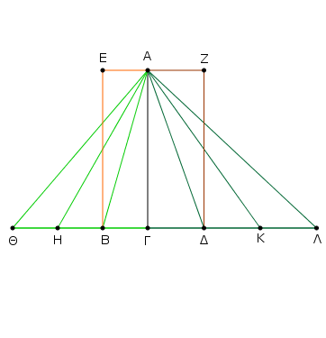
᾿Εκβεβλήσθω γὰρ ἡ ΒΔ ἐφ᾿ ἑκάτερα τὰ μέρη ἐπὶ τὰ Θ, Λ σημεῖα, καὶ κείσθωσαν τῇ μὲν ΒΓ βάσει ἴσαι [ὁσαιδηποτοῦν] αἱ ΒΗ, ΗΘ, τῇ δὲ ΓΔ βάσει ἴσαι ὁσαιδηποτοῦν αἱ ΔΚ, ΚΛ, καὶ ἐπεζεύχθωσαν αἱ ΑΗ, ΑΘ, ΑΚ, ΑΛ.
Καὶ ἐπεὶ ἴσαι εἰσὶν αἱ ΓΒ, ΒΗ, ΗΘ ἀλλήλαις, ἴσα ἐστὶ καὶ τὰ ΑΘΗ, ΑΗΒ, ΑΒΓ τρίγωνα ἀλλήλοις. ὁσαπλασίων ἄρα ἐστὶν ἡ ΘΓ βάσις τῆς ΒΓ βάσεως, τοσαυταπλάσιόν ἐστι καὶ τὸ ΑΘΓ τρίγωνον τοῦ ΑΒΓ τριγώνου.
διὰ τὰ αὐτὰ δὴ ὁσαπλασίων ἐστὶν ἡ ΛΓ βάσις τῆς ΓΔ βάσεως, τοσαυταπλάσιόν ἐστι καὶ τὸ ΑΛΓ τρίγωνον τοῦ ΑΓΔ τριγώνου· καὶ εἰ ἴση ἐστὶν ἡ ΘΓ βάσις τῇ ΓΛ βάσει, ἴσον ἐστὶ καὶ τὸ ΑΘΓ τρίγωνον τῳ ΑΓΛ τριγώνῳ, καὶ εἰ ὑπερέχει ἡ ΘΓ βάσις τῆς ΓΛ βάσεως, ὑπερέχει καὶ τὸ ΑΘΓ τρίγωνον τοῦ ΑΓΛ τριγώνου, καὶ εἰ ἐλάσσων, ἔλασσον.
τεσσάρων δὴ ὄντων μεγεθῶν δύο μὲν βάσεων τῶν ΒΓ, ΓΔ, δύο δὲ τριγώνων τῶν ΑΒΓ, ΑΓΔ εἴληπται ἰσάκις πολλαπλάσια τῆς μὲν ΒΓ βάσεως καὶ τοῦ ΑΒΓ τριγώνου ἥ τε ΘΓ βάσις καὶ τὸ ΑΘΓ τρίγωνον, τῆς δὲ ΓΔ βάσεως καὶ τοῦ ΑΔΓ τριγώνου ἄλλα, ἃ ἔτυχεν, ἰσάκις πολλαπλάσια ἥ τε ΛΓ βάσις καὶ τὸ ΑΛΓ τρίγωνον· καὶ δέδεικται, ὅτι, εἰ ὑπερέχει ἡ ΘΓ βάσις τῆς ΓΛ βάσεως, ὑπερέχει καὶ τὸ ΑΘΓ τρίγωνον τοῦ ΑΛΓ τριγώνου, καί εἰ ἴση, ἴσον, καὶ εἰ ἔλασσων, ἔλασσον· ἔστιν ἄρα ὡς ἡ ΒΓ βάσις πρὸς τὴν ΓΔ βάσιν, οὕτως τὸ ΑΒΓ τρίγωνον πρὸς τὸ ΑΓΔ τρίγωνον.
Καὶ ἐπεὶ τοῦ μὲν ΑΒΓ τριγώνου διπλάσιόν ἐστι τὸ ΕΓ παραλληλόγραμμον, τοῦ δὲ ΑΓΔ τριγώνου διπλάσιόν ἐστι τὸ ΖΓ παραλληλόγραμμον, τὰ δὲ μέρη τοῖς ὡσαύτως πολλαπλασίοις τὸν αὐτὸν ἔχει λόγον, ἔστιν ἄρα ὡς τὸ ΑΒΓ τρίγωνον πρὸς τὸ ΑΓΔ τρίγωνον, οὕτως τὸ ΕΓ παραλληλόγραμμον πρὸς τὸ ΖΓ παραλληλόγραμμον.
ἐπεὶ οὖν ἐδείχθη, ὡς μὲν ἡ ΒΓ βάσις πρὸς τὴν ΓΔ, οὕτως τὸ ΑΒΓ τρίγωνον πρὸς τὸ ΑΓΔ τρίγωνον, ὡς δὲ τὸ ΑΒΓ τρίγωνον πρὸς τὸ ΑΓΔ τρίγωνον, οὕτως τὸ ΕΓ παραλληλόγραμμον πρὸς τὸ ΓΖ παραλληλόγραμμον, καὶ ὡς ἄρα ἡ ΒΓ βάσις πρὸς τὴν ΓΔ βάσιν, οὕτως τὸ ΕΓ παραλληλόγραμμον πρὸς τὸ ΖΓ παραλληλόγραμμον.
Τὰ ἄρα τρίγωνα καὶ τὰ παραλληλόγραμμα τὰ ὑπὸ τὸ αὐτὸ ὕψος ὄντα πρὸς ἄλληλά ἐστιν ὡς αἱ βάσεις· ὅπερ ἔδει δεῖξαι.
᾿Εὰν τριγώνου παρὰ μίαν τῶν πλευρῶν ἀχθῇ τις εὐθεῖα, ἀνάλογον τεμεῖ τὰς τοῦ τριγώνου πλευράς· καὶ ἐὰν αἱ τοῦ τριγώνου πλευραὶ ἀνάλογον τμηθῶσιν, ἡ ἐπὶ τὰς τομὰς ἐπιζευγνυμένη εὐθεῖα παρὰ τὴν λοιπὴν ἔσται τοῦ τριγώνου πλευράν.
Τριγώνου γὰρ τοῦ ΑΒΓ παράλληλος μιᾷ τῶν πλευρῶν τῇ ΒΓ ἤχθω ἡ ΔΕ· λέγω, ὅτι ἐστὶν ὡς ἡ ΒΔ πρὸς τὴν ΔΑ, οὕτως ἡ ΓΕ πρὸς τὴν ΕΑ.
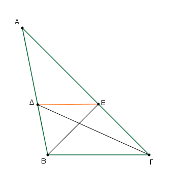
᾿Επεζεύχθωσαν γὰρ αἱ ΒΕ, ΓΔ. ῎Ισον ἄρα ἐστὶ τὸ ΒΔΕ τρίγωνον τῷ ΓΔΕ τριγώνῳ· ἐπὶ γὰρ τῆς αὐτῆς βάσεώς ἐστι τῆς ΔΕ καὶ ἐν ταῖς αὐταῖς παραλλήλοις ταῖς ΔΕ, ΒΓ· ἄλλο δέ τι τὸ ΑΔΕ τρίγωνον.
τὰ δὲ ἴσα πρὸς τὸ αὐτὸ τὸν αὐτὸν ἔχει λόγον· ἔστιν ἄρα ὡς τὸ ΒΔΕ τρίγωνον πρὸς τὸ ΑΔΕ [τρίγωνον], οὕτως τὸ ΓΔΕ τρίγωνον πρὸς τὸ ΑΔΕ τρίγωνον.
αλλ᾿ ὡς μὲν τὸ ΒΔΕ τρίγωνον πρὸς τὸ ΑΔΕ, οὕτως ἡ ΒΔ πρὸς τὴν ΔΑ· ὑπὸ γὰρ τὸ αὐτὸ ὕψος ὄντα τὴν ἀπὸ τοῦ Ε ἐπὶ τὴν ΑΒ κάθετον ἀγομένην πρὸς ἄλληλά εἰσιν ὡς αἱ βάσεις.
διὰ τὰ αὐτὰ δὴ ὡς τὸ ΓΔΕ τρίγωνον πρὸς τὸ ΑΔΕ, οὕτως ἡ ΓΕ πρὸς τὴν ΕΑ· καὶ ὡς ἄρα ἡ ΒΔ πρὸς τὴν ΔΑ, οὕτως ἡ ΓΕ πρὸς τὴν ΕΑ.
᾿Αλλὰ δὴ αἱ τοῦ ΑΒΓ τριγώνου πλευραὶ αἱ ΑΒ, ΑΓ ἀνάλογον τετμήσθωσαν, ὡς ἡ ΒΔ πρὸς τὴν ΔΑ, οὕτως ἡ ΓΕ πρὸς τὴν ΕΑ, καὶ ἐπεζεύχθω ἡ ΔΕ· λέγω, ὅτι παράλληλός ἐστιν ἡ ΔΕ τῇ ΒΓ.
Τῶν γὰρ αὐτῶν κατασκευασθέντων, ἐπεί ἐστιν ὡς ἡ ΒΔ πρὸς τὴν ΔΑ, οὕτως ἡ ΓΕ πρὸς τὴν ΕΑ, ἀλλ᾿ ὡς μὲν ἡ ΒΔ πρὸς τὴν ΔΑ, οὕτως τὸ ΒΔΕ τρίγωνον πρὸς τὸ ΑΔΕ τρίγωνον, ὡς δὲ ἡ ΓΕ πρὸς τὴν ΕΑ, οὕτως τὸ ΓΔΕ τρίγωνον πρὸς τὸ ΑΔΕ τρίγωνον, καὶ ὡς ἄρα τὸ ΒΔΕ τρίγωνον πρὸς τὸ ΑΔΕ τρίγωνον, οὕτως τὸ ΓΔΕ τρίγωνον πρὸς τὸ ΑΔΕ τρίγωνον.
ἑκάτερον ἄρα τῶν ΒΔΕ, ΓΔΕ τριγώνων πρὸς τὸ ΑΔΕ τὸν αὐτὸν ἔχει λόγον. ἴσον ἄρα ἐστὶ τὸ ΒΔΕ τρίγωνον τῷ ΓΔΕ τριγώνῳ· καί εἰσιν ἐπὶ τῆς αὐτῆς βάσεως τῆς ΔΕ. τὰ δὲ ἴσα τρίγωνα καὶ ἐπὶ τῆς αὐτῆς βάσεως ὄντα καὶ ἐν ταῖς αὐταῖς παραλλήλοις ἐστίν. παράλληλος ἄρα ἐστὶν ἡ ΔΕ τῇ ΒΓ.
᾿Εὰν ἄρα τριγώνου παρὰ μίαν τῶν πλευρῶν ἀχθῇ τις εὐθεῖα, ἀνάλογον τεμεῖ τὰς τοῦ τριγώνου πλευράς· καὶ ἐὰν αἱ τοῦ τριγώνου πλευραὶ ἀνάλογον τμηθῶσιν, ἡ ἐπὶ τὰς τομὰς ἐπιζευγνυμένη εὐθεῖα παρὰ τὴν λοιπὴν ἔσται τοῦ τριγώνου πλευράν· ὅπερ ἔδει δεῖξαι.
᾿Εὰν τριγώνου ἡ γωνία δίχα τμηθῇ, ἡ δὲ τέμνουσα τὴν γωνίαν εὐθεῖα τέμνῃ καὶ τὴν βάσιν, τὰ τῆς βάσεως τμήματα τὸν αὐτὸν ἕξει λόγον ταῖς λοιπαῖς τοῦ τριγώνου πλευραῖς· καὶ ἐὰν τὰ τῆς βάσεως τμήματα τὸν αὐτὸν ἔχῃ λόγον ταῖς λοιπαῖς τοῦ τριγώνου πλευραῖς, ἡ ἀπὸ τῆς κορυφῆς ἐπὶ τὴν τομὴν ἐπιζευγνυμένη εὐθεῖα δίχα τεμεῖ τὴν τοῦ τριγώνου γωνίαν.
῎Εστω τρίγωνον τὸ ΑΒΓ, καὶ τετμήσθω ἡ ὑπὸ ΒΑΓ γωνία δίχα ὑπὸ τῆς ΑΔ εὐθείας· λέγω, ὅτι ἐστὶν ὡς ἡ ΒΔ πρὸς τὴν ΓΔ, οὕτως ἡ ΒΑ πρὸς τὴν ΑΓ.
῎Ηχθω γὰρ διὰ τοῦ Γ τῇ ΔΑ παράλληλος ἡ ΓΕ, καὶ διαχθεῖσα ἡ ΒΑ συμπιπτέτω αὐτῇ κατὰ τὸ Ε. Καὶ ἐπεὶ εἰς παραλλήλους τὰς ΑΔ, ΕΓ εὐθεῖα ἐνέπεσεν ἡ ΑΓ, ἡ ἄρα ὑπὸ ΑΓΕ γωνία ἴση ἐστὶ τῇ ὑπὸ ΓΑΔ. ἀλλ᾿ ἡ ὑπὸ ΓΑΔ τῇ ὑπὸ ΒΑΔ ὑπόκειται ἴση· καὶ ἡ ὑπὸ ΒΑΔ ἄρα τῇ ὑπὸ ΑΓΕ ἐστιν ἴση.
πάλιν, ἐπεὶ εἰς παραλλήλους τὰς ΑΔ, ΕΓ εὐθεῖα ἐνέπεσεν ἡ ΒΑΕ, ἡ ἐκτὸς γωνία ἡ ὑπὸ ΒΑΔ ἴση ἐστὶ τῇ ἐντὸς τῇ ὑπὸ ΑΕΓ. ἐδείχθη δὲ καὶ ἡ ὑπὸ ΑΓΕ τῇ ὑπὸ ΒΑΔ ἴση· καὶ ἡ ὑπὸ ΑΓΕ ἄρα γωνία τῇ ὑπὸ ΑΕΓ ἐστιν ἴση· ὥστε καὶ πλευρὰ ἡ ΑΕ πλευρᾷ τῇ ΑΓ ἐστιν ἴση.
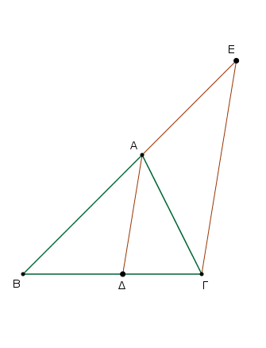
καὶ ἐπεὶ τριγώνου τοῦ ΒΓΕ παρὰ μίαν τῶν πλευρῶν τὴν ΕΓ ἦκται ἡ ΑΔ, ἀνάλογον ἄρα ἐστὶν ὡς ἡ ΒΔ πρὸς τὴν ΔΓ, οὕτως ἡ ΒΑ πρὸς τὴν ΑΕ. ἴση δὲ ἡ ΑΕ τῇ ΑΓ· ὡς ἄρα ἡ ΒΔ πρὸς τὴν ΔΓ, οὕτως ἡ ΒΑ πρὸς τὴν ΑΓ.
᾿Αλλὰ δὴ ἔστω ὡς ἡ ΒΔ πρὸς τὴν ΔΓ, οὕτως ἡ ΒΑ πρὸς τὴν ΑΓ, καὶ ἐπεζεύχθω ἡ ΑΔ· λέγω, ὅτι δίχα τέτμηται ἡ ὑπὸ ΒΑΓ γωνία ὑπὸ τῆς ΑΔ εὐθείας.
Τῶν γὰρ αὐτῶν κατασκευασθέντων, ἐπεί ἐστιν ὡς ἡ ΒΔ πρὸς τὴν ΔΓ, οὕτως ἡ ΒΑ πρὸς τὴν ΑΓ, ἀλλὰ καὶ ὡς ἡ ΒΔ πρὸς τὴν ΔΓ, οὕτως ἐστὶν ἡ ΒΑ πρὸς τὴν ΑΕ· τριγώνου γὰρ τοῦ ΒΓΕ παρὰ μίαν τὴν ΕΓ ἦκται ἡ ΑΔ· καὶ ὡς ἄρα ἡ ΒΑ πρὸς τὴν ΑΓ, οὕτως ἡ ΒΑ πρὸς τὴν ΑΕ. ἴση ἄρα ἡ ΑΓ τῇ ΑΕ· ὥστε καὶ γωνία ἡ ὑπὸ ΑΕΓ τῇ ὑπὸ ΑΓΕ ἐστιν ἴση. ἀλλ᾿ ἡ μὲν ὑπὸ ΑΕΓ τῇ ἐκτὸς τῇ ὑπὸ ΒΑΔ [ἐστιν] ἴση, ἡ δὲ ὑπὸ ΑΓΕ τῇ ἐναλλὰξ τῇ ὑπὸ ΓΑΔ ἐστιν ἴση· καὶ ἡ ὑπὸ ΒΑΔ ἄρα τῇ ὑπὸ ΓΑΔ ἐστιν ἴση. ἡ ἄρα ὑπὸ ΒΑΓ γωνία δίχα τέτμηται ὑπὸ τῆς ΑΔ εὐθείας.
᾿Εὰν ἄρα τριγώνου ἡ γωνία δίχα τμηθῇ, ἡ δὲ τέμνουσα τὴν γωνίαν εὐθεῖα τέμνῃ καὶ τὴν βάσιν, τὰ τῆς βάσεως τμήματα τὸν αὐτὸν ἕξει λόγον ταῖς λοιπαῖς τοῦ τριγώνου πλευραῖς· καὶ ἐὰν τὰ τῆς βάσεως τμήματα τὸν αὐτὸν ἔχῃ λόγον ταῖς λοιπαῖς τοῦ τριγώνου πλευραῖς, ἡ ἀπὸ τῆς κορυφῆς ἐπὶ τὴν τομὴν ἐπιζευγνυμένη εὐθεῖα δίχα τέμνει τὴν τοῦ τριγώνου γωνίαν· ὅπερ ἔδει δεῖξαι.
Τῶν ἰσογωνίων τριγώνων ἀνάλογόν εἰσιν αἱ πλευραὶ αἱ περὶ τὰς ἴσας γωνίας καὶ ὁμόλογοι αἱ ὑπὸ τὰς ἴσας γωνίας ὑποτείνουσαι.
῎Εστω ἰσογώνια τρίγωνα τὰ ΑΒΓ, ΔΓΕ ἴσην ἔχοντα τὴν μὲν ὑπὸ ΑΒΓ γωνίαν τῇ ὑπὸ ΔΓΕ, τὴν δὲ ὑπὸ ΒΑΓ τῇ ὑπὸ ΓΔΕ καὶ ἔτι τὴν ὑπὸ ΑΓΒ τῇ ὑπὸ ΓΕΔ· λέγω, ὅτι τῶν ΑΒΓ, ΔΓΕ τριγώνων ἀνάλογόν εἰσιν αἱ πλευραὶ αἱ περὶ τὰς ἴσας γωνίας καὶ ὁμόλογοι αἱ ὑπὸ τὰς ἴσας γωνίας ὑποτείνουσαι.
Κείσθω γὰρ ἐπ᾿ εὐθείας ἡ ΒΓ τῇ ΓΕ. καὶ ἐπεὶ αἱ ὑπὸ ΑΒΓ, ΑΓΒ γωνίαι δύο ὀρθῶν ἐλάττονές εἰσιν, ἴση δὲ ἡ ὑπὸ ΑΓΒ τῇ ὑπὸ ΔΕΓ, αἱ ἄρα ὑπὸ ΑΒΓ, ΔΕΓ δύο ὀρθῶν ἐλάττονές εἰσιν· αἱ ΒΑ, ΕΔ ἄρα ἐκβαλλόμεναι συμπεσοῦνται. ἐκβεβλήσθωσαν καὶ συμπιπτέτωσαν κατὰ τὸ Ζ. Καὶ ἐπεὶ ἴση ἐστὶν ἡ ὑπὸ ΔΓΕ γωνία τῇ ὑπὸ ΑΒΓ, παράλληλός ἐστιν ἡ ΒΖ τῇ ΓΔ.
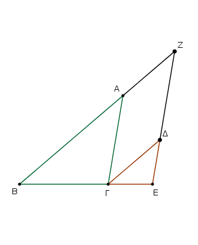
πάλιν, ἐπεὶ ἴση ἐστὶν ἡ ὑπὸ ΑΓΒ τῇ ὑπὸ ΔΕΓ, παράλληλός ἐστιν ἡ ΑΓ τῇ ΖΕ. παραλληλόγραμμον ἄρα ἐστὶ τὸ ΖΑΓΔ· ἴση ἄρα ἡ μὲν ΖΑ τῇ ΔΓ, ἡ δὲ ΑΓ τῇ ΖΔ. καὶ ἐπεὶ τριγώνου τοῦ ΖΒΕ παρὰ μίαν τὴν ΖΕ ἦκται ἡ ΑΓ, ἐστιν ἄρα ὡς ἡ ΒΑ πρὸς τὴν ΑΖ, οὕτως ἡ ΒΓ πρὸς τὴν ΓΕ. ἴση δὲ ἡ ΑΖ τῇ ΓΔ· ὡς ἄρα ἡ ΒΑ πρὸς τὴν ΓΔ, οὕτως ἡ ΒΓ πρὸς τὴν ΓΕ, καὶ ἐναλλὰξ ὡς ἡ ΑΒ πρὸς τὴν ΒΓ, οὕτως ἡ ΔΓ πρὸς τὴν ΓΕ.
πάλιν, ἐπεὶ παράλληλός ἐστιν ἡ ΓΔ τῇ ΒΖ, ἔστιν ἄρα ὡς ἡ ΒΓ πρὸς τὴν ΓΕ, οὕτως ἡ ΖΔ πρὸς τὴν ΔΕ. ἴση δὲ ἡ ΖΔ τῇ ΑΓ· ὡς ἄρα ἡ ΒΓ πρὸς τὴν ΓΕ, οὕτως ἡ ΑΓ πρὸς τὴν ΔΕ, καὶ ἐναλλὰξ ὡς ἡ ΒΓ πρὸς τὴν ΓΑ, οὕτως ἡ ΓΕ πρὸς τὴν ΕΔ. ἐπεὶ οὖν ἐδείχθη ὡς μὲν ἡ ΑΒ πρὸς τὴν ΒΓ, οὕτως ἡ ΔΓ πρὸς τὴν ΓΕ, ὡς δὲ ἡ ΒΓ πρὸς τὴν ΓΑ, οὕτως ἡ ΓΕ πρὸς τὴν ΕΔ, δι᾿ ἴσου ἄρα ὡς ἡ ΒΑ πρὸς τὴν ΑΓ, οὕτως ἡ ΓΔ πρὸς τὴν ΔΕ.
Τῶν ἄρα ἰσογωνίων τριγώνων ἀνάλογόν εἰσιν αἱ πλευραὶ αἱ περὶ τὰς ἴσας γωνίας καὶ ὁμόλογοι αἱ ὑπὸ τὰς ἴσας γωνίας ὑποτείνουσαι· ὅπερ ἔδει δεῖξαι.
᾿Εὰν δύο τρίγωνα τὰς πλευρὰς ἀνάλογον ἔχῃ, ἰσογώνια ἔσται τὰ τρίγωνα καὶ ἴσας ἕξει τὰς γωνίας, ὑφ᾿ ἃς αἱ ὁμόλογοι πλευραὶ ὑποτείνουσιν.
῎Εστω δύο τρίγωνα τὰ ΑΒΓ, ΔΕΖ τὰς πλευρὰς ἀνάλογον ἔχοντα, ὡς μὲν τὴν ΑΒ πρὸς τὴν ΒΓ, οὕτως τὴν ΔΕ πρὸς τὴν ΕΖ, ὡς δὲ τὴν ΒΓ πρὸς τὴν ΓΑ, οὕτως τὴν ΕΖ πρὸς τὴν ΖΔ, καὶ ἔτι ὡς τὴν ΒΑ πρὸς τὴν ΑΓ, οὕτως τὴν ΕΔ πρὸς τὴν ΔΖ. λέγω, ὅτι ἰσογώνιόν ἐστι τὸ ΑΒΓ τρίγωνον τῷ ΔΕΖ τριγώνῳ καὶ ἴσας ἕξουσι τὰς γωνίας, ὑφ᾿ ἃς αἱ ὁμόλογοι πλευραὶ ὑποτείνουσιν, τὴν μὲν ὑπὸ ΑΒΓ τῇ ὑπὸ ΔΕΖ, τὴν δὲ ὑπὸ ΒΓΑ τῇ ὑπὸ ΕΖΔ καὶ ἔτι τὴν ὑπὸ ΒΑΓ τῇ ὑπὸ ΕΔΖ.
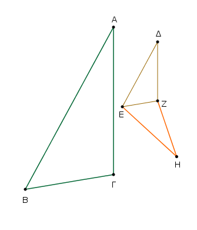
Συνεστάτω γὰρ πρὸς τῇ ΕΖ εὐθείᾳ καὶ τοῖς πρὸς αὐτῇ σημείοις τοῖς Ε, Ζ τῇ μὲν ὑπὸ ΑΒΓ γωνίᾳ ἴση ἡ ὑπὸ ΖΕΗ, τῇ δὲ ὑπὸ ΑΓΒ ἴση ἡ ὑπὸ ΕΖΗ·
λοιπὴ ἄρα ἡ πρὸς τῷ Α λοιπῇ τῇ πρὸς τῷ Η ἐστιν ἴση. ῎Ισογώνιον ἄρα ἐστὶ τὸ ΑΒΓ τρίγωνον τῷ ΕΗΖ [τριγώνῳ]. τῶν ἄρα ΑΒΓ, ΕΗΖ τριγώνων ἀνάλογόν εἰσιν αἱ πλευραὶ αἱ περὶ τὰς ἴσας γωνίας καὶ ὁμόλογοι αἱ ὑπὸ τὰς ἴσας γωνίας ὑποτείνουσαι·
ἔστιν ἄρα ὡς ἡ ΑΒ πρὸς τὴν ΒΓ, [οὕτως] ἡ ΗΕ πρὸς τὴν ΕΖ. ἀλλ᾿ ὡς ἡ ΑΒ πρὸς τὴν ΒΓ, οὕτως ὑπόκειται ἡ ΔΕ πρὸς τὴν ΕΖ· ὡς ἄρα ἡ ΔΕ πρὸς τὴν ΕΖ, οὕτως ἡ ΗΕ πρὸς τὴν ΕΖ. ἑκατέρα ἄρα τῶν ΔΕ, ΗΕ πρὸς τὴν ΕΖ τὸν αὐτὸν ἔχει λόγον· ἴση ἄρα ἐστὶν ἡ ΔΕ τῇ ΗΕ.
διὰ τὰ αὐτὰ δὴ καὶ ἡ ΔΖ τῇ ΗΖ ἐστιν ἴση. ἐπεὶ οὖν ἴση ἐστὶν ἡ ΔΕ τῇ ΕΗ, κοινὴ δὲ ἡ ΕΖ, δύο δὴ αἱ ΔΕ, ΕΖ δυσὶ ταῖς ΗΕ, ΕΖ ἴσαι εἰσίν· καὶ βάσις ἡ ΔΖ βάσει τῇ ΖΗ [ἐστιν] ἴση· γωνία ἄρα ἡ ὑπὸ ΔΕΖ γωνίᾳ τῇ ὑπὸ ΗΕΖ ἐστιν ἴση, καὶ τὸ ΔΕΖ τρίγωνον τῷ ΗΕΖ τριγώνῳ ἴσον, καὶ αἱ λοιπαὶ γωνίαι ταῖς λοιπαῖς γωνίαις ἴσαι, ὑφ᾿ ἃς αἱ ἴσαι πλευραὶ ὑποτείνουσιν. ἴση ἄρα ἐστὶ καὶ ἡ μὲν ὑπὸ ΔΖΕ γωνία τῇ ὑπὸ ΗΖΕ, ἡ δὲ ὑπὸ ΕΔΖ τῇ ὑπὸ ΕΗΖ.
καὶ ἐπεὶ ἡ μὲν ὑπὸ ΖΕΔ τῇ ὑπὸ ΗΕΖ ἐστιν ἴση, ἀλλ᾿ ἡ ὑπὸ ΗΕΖ τῇ ὑπὸ ΑΒΓ, καὶ ἡ ὑπὸ ΑΒΓ ἄρα γωνία τῇ ὑπὸ ΔΕΖ ἐστιν ἴση. διὰ τὰ αὐτὰ δὴ καὶ ἡ ὑπὸ ΑΓΒ τῇ ὑπὸ ΔΖΕ ἐστιν ἴση, καὶ ἔτι ἡ πρὸς τῷ Α τῇ πρὸς τῷ Δ· ἰσογώνιον ἄρα ἐστὶ τὸ ΑΒΓ τρίγωνον τῷ ΔΕΖ τριγώνῳ.
᾿Εὰν ἄρα δύο τρίγωνα τὰς πλευρὰς ἀνάλογον ἔχῃ, ἰσογώνια ἔσται τὰ τρίγωνα καὶ ἴσας ἕξει τὰς γωνίας, ὑφ᾿ ἃς αἱ ὁμόλογοι πλευραὶ ὑποτείνουσιν· ὅπερ ἔδει δεῖξαι.
᾿Εὰν δύο τρίγωνα μίαν γωνίαν μιᾷ γωνίᾳ ἴσην ἔχῃ, περὶ δὲ τὰς ἴσας γωνίας τὰς πλευρὰς ἀνάλογον, ἰσογώνια ἔσται τὰ τρίγωνα καὶ ἴσας ἕξει τὰς γωνίας, ὑφ᾿ ἃς αἱ ὁμόλογοι πλευραὶ ὑποτείνουσιν.
῎Εστω δύο τρίγωνα τὰ ΑΒΓ, ΔΕΖ μίαν γωνίαν τὴν ὑπὸ ΒΑΓ μιᾷ γωνίᾳ τῇ ὑπὸ ΕΔΖ ἴσην ἔχοντα, περὶ δὲ τὰς ἴσας γωνίας τὰς πλευρὰς ἀνάλογον, ὡς τὴν ΒΑ πρὸς τὴν ΑΓ, οὕτως τὴν ΕΔ πρὸς τὴν ΔΖ· λέγω, ὅτι ἰσογώνιόν ἐστι τὸ ΑΒΓ τρίγωνον τῷ ΔΕΖ τριγώνῳ καὶ ἴσην ἕξει τὴν ὑπὸ ΑΒΓ γωνίαν τῇ ὑπὸ ΔΕΖ, τὴν δὲ ὑπὸ ΑΓΒ τῇ ὑπὸ ΔΖΕ.
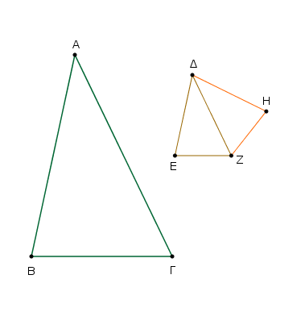
Συνεστάτω γὰρ πρὸς τῇ ΔΖ εὐθείᾳ καὶ τοῖς πρὸς αὐτῇ σημείοις τοῖς Δ, Ζ ὁποτέρᾳ μὲν τῶν ὑπὸ ΒΑΓ, ΕΔΖ ἴση ἡ ὑπὸ ΖΔΗ, τῇ δὲ ὑπὸ ΑΓΒ ἴση ἡ ὑπὸ ΔΖΗ· λοιπὴ ἄρα ἡ πρὸς τῷ Β γωνία λοιπῇ τῇ πρὸς τῷ Η ἴση ἐστίν.
᾿Ισογώνιον ἄρα ἐστὶ τὸ ΑΒΓ τρίγωνον τῷ ΔΗΖ τριγώνῳ. ἀνάλογον ἄρα ἐστὶν ὡς ἡ ΒΑ πρὸς τὴν ΑΓ, οὕτως ἡ ΗΔ πρὸς τὴν ΔΖ. ὑπόκειται δὲ καὶ ὡς ἡ ΒΑ πρὸς τὴν ΑΓ, οὕτως ἡ ΕΔ πρὸς τὴν ΔΖ· καὶ ὡς ἄρα ἡ ΕΔ πρὸς τὴν ΔΖ, οὕτως ἡ ΗΔ πρὸς τὴν ΔΖ. ἴση ἄρα ἡ ΕΔ τῇ ΔΗ· καὶ κοινὴ ἡ ΔΖ· δύο δὴ αἱ ΕΔ, ΔΖ δυσὶ ταῖς ΗΔ, ΔΖ ἴσας εἰσίν· καὶ γωνία ἡ ὑπὸ ΕΔΖ γωνίᾳ τῇ ὑπὸ ΗΔΖ [ἐστιν] ἴση· βάσις ἄρα ἡ ΕΖ βάσει τῇ ΗΖ ἐστιν ἴση, καὶ τὸ ΔΕΖ τρίγωνον τῷ ΗΔΖ τριγώνῳ ἴσον ἐστίν, καὶ αἱ λοιπαὶ γωνίαι ταῖς λοιπαῖς γωνίαις ἴσας ἔσονται, ὐφ᾿ ἃς ἴσας πλευραὶ ὑποτείνουσιν.
ἴση ἄρα ἐστὶν ἡ μὲν ὑπὸ ΔΖΗ τῇ ὑπο ΔΖΕ, ἡ δὲ ὑπὸ ΔΗΖ τῇ ὑπὸ ΔΕΖ. ἀλλ᾿ ἡ ὑπὸ ΔΖΗ τῇ ὑπὸ ΑΓΒ ἐστιν ἴση· καὶ ἡ ὑπὸ ΑΓΒ ἄρα τῇ ὑπὸ ΔΖΕ ἐστιν ἴση. ὑπόκειται δὲ καὶ ἡ ὑπὸ ΒΑΓ τῇ ὑπὸ ΕΔΖ ἴση· καὶ λοιπὴ ἄρα ἡ πρὸς τῷ Β λοιπῇ τῇ πρὸς τῷ Ε ἴση ἐστίν· ἰσογώνιον ἄρα ἐστὶ τὸ ΑΒΓ τρίγωνον τῷ ΔΕΖ τριγώνῳ.
᾿Εὰν ἄρα δύο τρίγωνα μίαν γωνίαν μιᾷ γωνίᾳ ἴσην ἔχῃ, περὶ δὲ τὰς ἴσας γωνίας τὰς πλευρὰς ἀνάλογον, ἰσογώνια ἔσται τὰ τρίγωνα καὶ ἴσας ἕξει τὰς γωνίας, ὑφ᾿ ἃς αἱ ὁμόλογοι πλευραὶ ὑποτείνουσιν· ὅπερ ἔδει δεῖξαι.
᾿Εὰν δύο τρίγωνα μίαν γωνίαν μιᾷ γωνίᾳ ἴσην ἔχῃ, περὶ δὲ ἄλλας γωνίας τὰς πλευρὰς ἀνάλογον, τῶν δὲ λοιπῶν ἑκατέραν ἅμα ἤτοι ἐλάσσονα ἢ μὴ ἐλάσσονα ὀρθῆς, ἰσογώνια ἔσται τὰ τρίγωνα καὶ ἴσας ἕξει τὰς γωνίας, περὶ ἃς ἀνάλογόν εἰσιν αἱ πλευραί.
῎Εστω δύο τρίγωνα τὰ ΑΒΓ, ΔΕΖ μίαν γωνίαν μιᾷ γωνίᾳ ἴσην ἔχοντα τὴν ὑπὸ ΒΑΓ τῇ ὑπὸ ΕΔΖ, περὶ δὲ ἄλλας γωνίας τὰς ὑπὸ ΑΒΓ, ΔΕΖ τὰς πλευρὰς ἀνάλογον, ὡς τὴν ΑΒ πρὸς τὴν ΒΓ, οὕτως τὴν ΔΕ πρὸς τὴν ΕΖ, τῶν δὲ λοιπῶν τῶν πρὸς τοῖς Γ, Ζ πρότερον ἑκατέραν ἅμα ἐλάσσονα ὀρθῆς· λέγω, ὅτι ἰσογώνιόν ἐστι τὸ ΑΒΓ τρίγωνον τῷ ΔΕΖ τριγώνῳ, καὶ ἴση ἔσται ἡ ὑπὸ ΑΒΓ γωνία τῇ ὑπὸ ΔΕΖ, καὶ λοιπὴ δηλονότι ἡ πρὸς τῷ Γ λοιπῇ τῇ πρὸς τῷ Ζ ἴση.
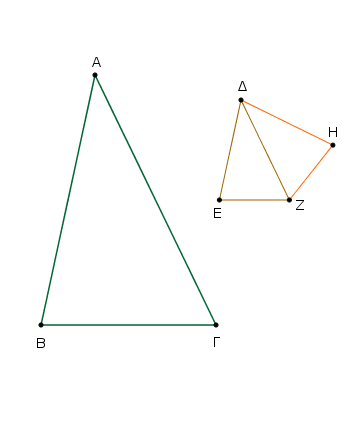
Εἰ γὰρ ἄνισός ἐστιν ἡ ὑπὸ ΑΒΓ γωνία τῇ ὑπὸ ΔΕΖ, μία αὐτῶν μείζων ἐστίν. ἔστω μείζων ἡ ὑπὸ ΑΒΓ. καὶ συνεστάτω πρὸς τῇ ΑΒ εὐθείᾳ καὶ τῷ πρὸς αὐτῇ σημείῳ τῷ Β τῇ ὑπὸ ΔΕΖ γωνίᾳ ἴση ἡ ὑπὸ ΑΒΗ. Καὶ ἐπεὶ ἴση ἐστὶν ἡ μὲν Α γωνία τῇ Δ, ἡ δὲ ὑπὸ ΑΒΗ τῇ ὑπὸ ΔΕΖ, λοιπὴ ἄρα ἡ ὑπὸ ΑΗΒ λοιπῇ τῇ ὑπὸ ΔΖΕ ἐστιν ἴση. ἰσογώνιον ἄρα ἐστὶ τὸ ΑΒΗ τρίγωνον τῷ ΔΕΖ τριγώνῳ.
ἔστιν ἄρα ὡς ἡ ΑΒ πρὸς τὴν ΒΗ, οὕτως ἡ ΔΕ πρὸς τὴν ΕΖ. ὡς δὲ ἡ ΔΕ πρὸς τὴν ΕΖ, [οὕτως] ὑπόκειται ἡ ΑΒ πρὸς τὴν ΒΓ· ἡ ΑΒ ἄρα πρὸς ἑκατέραν τῶν ΒΓ, ΒΗ τὸν αὐτὸν ἔχει λόγον· ἴση ἄρα ἡ ΒΓ τῇ ΒΗ.
ὥστε καὶ γωνία ἡ πρὸς τῷ Γ γωνίᾳ τῇ ὑπὸ ΒΗΓ ἐστιν ἴση. ἐλάττων δὲ ὀρθῆς ὑπόκειται ἡ πρὸς τῷ Γ· ἐλάττων ἄρα ἐστὶν ὀρθῆς καὶ ὑπὸ ΒΗΓ· ὥστε ἡ ἐφεξῆς αὐτῇ γωνία ἡ ὑπὸ ΑΗΒ μείζων ἐστὶν ὀρθῆς. καὶ ἐδείχθη ἴση οὖσα τῇ πρὸς τῷ Ζ· καὶ ἡ πρὸς τῷ Ζ ἄρα μείζων ἐστὶν ὀρθῆς. ὑπόκειται δὲ ἐλάσσων ὀρθῆς· ὅπερ ἐστὶν ἄτοπον.
οὐκ ἄρα ἄνισός ἐστιν ἡ ὑπὸ ΑΒΓ γωνία τῇ ὑπὸ ΔΕΖ· ἴση ἄρα. ἔστι δὲ καὶ ἡ πρὸς τῷ Α ἴση τῇ πρὸς τῷ Δ· καὶ λοιπὴ ἄρα ἡ πρὸς τῷ Γ λοιπῇ τῇ πρὸς τῷ Ζ ἴση ἐστίν. ἰσογώνιον ἄρα ἐστὶ τὸ ΑΒΓ τρίγωνον τῷ ΔΕΖ τριγώνῳ.
᾿Αλλὰ δὴ πάλιν ὑποκείσθω ἑκατέρα τῶν πρὸς τοῖς Γ, Ζ μὴ ἐλάσσων ὀρθῆς· λέγω πάλιν, ὅτι καὶ οὕτως ἐστὶν ἰσογώνιον τὸ ΑΒΓ τρίγωνον τῷ ΔΕΖ τριγώνῳ. Τῶν γὰρ αὐτῶν κατασκευασθέντων ὁμοίως δείξομεν, ὅτι ἴση ἐστὶν ἡ ΒΓ τῇ ΒΗ· ὥστε καὶ γωνία ἡ πρὸς τῷ Γ τῇ ὑπὸ ΒΗΓ ἴση ἐστίν. οὐκ ἐλάττων δὲ ὀρθῆς ἡ πρὸς τῷ Γ· οὐκ ἐλάττων ἄρα ὀρθῆς οὐδὲ ἡ ὑπὸ ΒΗΓ. τριγώνου δὴ τοῦ ΒΗΓ αἱ δύο γωνίαι δύο ὀρθῶν οὔκ εἰσιν ἐλάττονες· ὅπερ ἐστὶν ἀδύνατον. οὐκ ἄρα πάλιν ἄνισός ἐστιν ἡ ὑπὸ ΑΒΓ γωνία τῇ ὑπὸ ΔΕΖ· ἴση ἄρα. ἔστι δὲ καὶ ἡ πρὸς τῷ Α τῇ πρὸς τῷ Δ ἴση· λοιπὴ ἄρα ἡ πρὸς τῷ Γ λοιπῇ τῇ πρὸς τῷ Ζ ἴση ἐστίν. ἰσογώνιον ἄρα ἐστὶ τὸ ΑΒΓ τρίγωνον τῷ ΔΕΖ τριγώνῳ.
᾿Εὰν ἄρα δύο τρίγωνα μίαν γωνίαν μιᾷ γωνίᾳ ἴσην ἔχῃ, περὶ δὲ ἄλλας γωνίας τὰς πλευρὰς ἀνάλογον, τῶν δὲ λοιπῶν ἑκατέραν ἅμα ἐλάττονα ἢ μὴ ἐλάττονα ὀρθῆς, ἰσογώνια ἔσται τὰ τρίγωνα καὶ ἴσας ἕξει τὰς γωνίας, περὶ ἃς ἀνάλογόν εἰσιν αἱ πλευραί· ὅπερ ἔδει δεῖξαι.
᾿Εὰν ἐν ὀρθογωνίῳ τριγώνῳ ἀπό τῆς ὀρθῆς γωνίας ἐπὶ τὴν βάσιν κάθετος ἀχθῇ, τὰ πρὸς τῇ καθέτῳ τρίγωνα ὅμοιά ἐστι τῷ τε ὅλῳ καὶ ἀλλήλοις.
῎Εστω τρίγωνον ὀρθογώνιον τὸ ΑΒΓ ὀρθὴν ἔχον τὴν ὑπὸ ΒΑΓ γωνίαν, καὶ ἤχθω ἀπὸ τοῦ Α ἐπὶ τὴν ΒΓ κάθετος ἡ ΑΔ· λέγω, ὅτι ὅμοιόν ἐστιν ἑκάτερον τῶν ΑΒΔ, ΑΔΓ τριγώνων ὅλῳ τῷ ΑΒΓ καὶ ἔτι ἀλλήλοις.
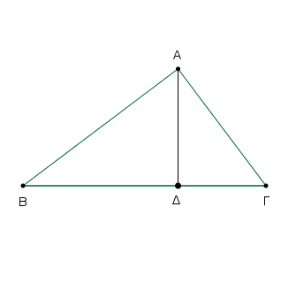
᾿Επεὶ γὰρ ἴση ἐστὶν ἡ ὑπὸ ΒΑΓ τῇ ὑπὸ ΑΔΒ· ὀρθὴ γὰρ ἑκατέρα· καὶ κοινὴ τῶν δύο τριγώνων τοῦ τε ΑΒΓ καὶ τοῦ ΑΒΔ ἡ πρὸς τῷ Β, λοιπὴ ἄρα ἡ ὑπὸ ΑΓΒ λοιπῇ τῇ ὑπο ΒΑΔ ἐστιν ἴση· ἰσογώνιον ἄρα ἐστὶ τὸ ΑΒΓ τρίγωνον τῷ ΑΒΔ τριγώνῳ. ἔστιν ἄρα ὡς ἡ ΒΓ ὑποτείνουσα τὴν ὀρθὴν τοῦ ΑΒΓ τριγώνου πρὸς τὴν ΒΑ ὑποτείνουσαν τὴν ὀρθὴν τοῦ ΑΒΔ τριγώνου, οὕτως αὐτὴ ἡ ΑΒ ὑποτείνουσα τὴν πρὸς τῷ Γ γωνίαν τοῦ ΑΒΓ τριγώνου πρὸς τὴν ΒΔ ὑποτείνουσαν τὴν ἴσην τὴν ὑπὸ ΒΑΔ τοῦ ΑΒΔ τριγώνου, καὶ ἔτι ἡ ΑΓ πρὸς τὴν ΑΔ ὑποτείνουσαν τὴν πρὸς τῷ Β γωνίαν κοινὴν τῶν δύο τριγώνων. τὸ ΑΒΓ ἄρα τρίγωνον τῷ ΑΒΔ τριγώνῳ ἰσογώνιόν τέ ἐστι καὶ τὰς περὶ τὰς ἴσας γωνίας πλευρὰς ἀνάλογον ἔχει. ὅμοιον ἄμα [ἐστὶ] τὸ ΑΒΓ τρίγωνον τῷ ΑΒΔ τριγώνῳ.
ὁμοίως δὴ δείξομεν, ὅτι καὶ τῷ ΑΔΓ τριγώνῳ ὅμοιόν ἐστι τὸ ΑΒΓ τρίγωνον· ἑκάτερον ἄρα τῶν ΑΒΔ, ΑΔΓ [τριγώνων] ὅμοιόν ἐστιν ὅλῳ τῷ ΑΒΓ.
Λέγω δή, ὅτι καὶ ἀλλήλοις ἐστὶν ὅμοια τὰ ΑΒΔ, ΑΔΓ τρίγωνα. ᾿Επεὶ γὰρ ὀρθὴ ἡ ὑπὸ ΒΔΑ ὀρθῇ τῇ ὑπὸ ΑΔΓ ἐστιν ἴση, ἀλλὰ μὴν καὶ ἡ ὑπὸ ΒΑΔ τῇ πρὸς τῷ Γ ἐδείχθη ἴση, καὶ λοιπὴ ἄρα ἡ πρὸς τῷ Β λοιπῇ τῇ ὑπὸ ΔΑΓ ἐστιν ἴση· ἰσογώνιον ἄρα ἐστὶ τὸ ΑΒΔ τρίγωνον τῷ ΑΔΓ τριγώνῳ. ἔστιν ἄρα ὡς ἡ ΒΔ τοῦ ΑΒΔ τριγώνου ὑποτείνουσα τὴν ὑπὸ ΒΑΔ πρὸς τὴν ΔΑ τοῦ ΑΔΓ τριγώνου ὑποτείνουσαν τὴν πρὸς τῷ Γ ἴσην τῇ ὑπὸ ΒΑΔ, οὕτως αὐτὴ ἡ ΑΔ τοῦ ΑΒΔ τριγώνου ὑποτείνουσα τὴν πρὸς τῷ Β γωνίαν πρὸς τὴν ΔΓ ὑποτείνουσαν τὴν ὑπὸ ΔΑΓ τοῦ ΑΔΓ τριγώνου ἴσην τῇ πρὸς τῷ Β, καὶ ἔτι ἡ ΒΑ πρὸς τὴν ΑΓ ὑποτείνουσαι τὰς ὀρθάς· ὅμοιον ἄρα ἐστὶ τὸ ΑΒΔ τρίγωνον τῷ ΑΔΓ τριγώνῳ.
᾿Εὰν ἄρα ἐν ὀρθογωνίῳ τριγώνῳ ἀπὸ τῆς ὀρθῆς γωνίας ἐπὶ τὴν βάσιν κάθετος ἀχθῇ, τὰ πρὸς τῇ καθέτῳ τρίγωνα ὅμοιά ἐστι τῷ τε ὅλῳ καὶ ἀλλήλοις [ὅπερ ἔδει δεῖξαι].
Πόρισμα ᾿Εκ δὴ τούτου φανερόν, ὅτι ἐὰν ἐν ὀρθογωνίῳ τριγώνῳ ἀπὸ τῆς ὀρθῆς γωνίας ἐπὶ τὴν βάσις κάθετος ἀχθῇ, ἡ ἀχθεῖσα τῶν τῆς βάσεως τμημάτων μέση ἀνάλογόν ἐστιν· ὅπερ ἔδει δεῖξαι.
Τῆς δοθείσης εὐθείας τὸ προσταχθὲν μέρος ἀφελεῖν.
῎Εστω ἡ δοθεῖσα εὐθεῖα ἡ ΑΒ· δεῖ δὴ τῆς ΑΒ τὸ προσταχθὲν μέρος ἀφελεῖν.
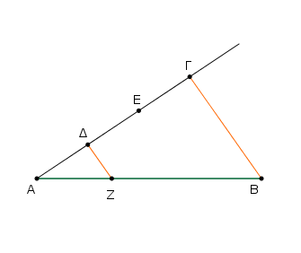
᾿Επιτετάχθω δὴ τὸ τρίτον. [καὶ] διήθχω τις ἀπὸ τοῦ Α εὐθεῖα ἡ ΑΓ γωνίαν περιέχουσα μετὰ τῆς ΑΒ τυχοῦσαν· καὶ εἰλήφθω τυχὸν σημεῖον ἐπὶ τῆς ΑΓ τὸ Δ, καὶ κείσθωσαν τῇ ΑΔ ἴσαι αἱ ΔΕ, ΕΓ. καὶ ἐπεζεύχθω ἡ ΒΓ, καὶ διὰ τοῦ Δ παράλληλος αὐτῇ ἤχθω ἡ ΔΖ.
᾿Επεὶ οὖν τριγώνου τοῦ ΑΒΓ παρὰ μίαν τῶν πλευρῶν τὴν ΒΓ ἦκται ἡ ΖΔ, ἀνάλογον ἄρα ἐστὶν ὡς ἡ ΓΔ πρὸς τὴν ΔΑ, οὕτως ἡ ΒΖ πρὸς τὴν ΖΑ. διπλῆ δὲ ἡ ΓΔ τῆς ΔΑ· διπλῆ ἄρα καὶ ἡ ΒΖ τῆς ΖΑ· τριπλῆ ἄρα ἡ ΒΑ τῆς ΑΖ.
Τῆς ἄρα δοθείσης εὐθείας τῆς ΑΒ τὸ ἐπιταχθὲν τρίτον μέρος ἀφῄρηται τὸ ΑΖ· ὅπερ ἔδει ποιῆσαι.
Τὴν δοθεῖσαν εὐθεῖαν ἄτμητον τῇ δοθείσῃ τετμημένῃ ὁμοίως τεμεῖν.
῎Εστω ἡ μὲν δοθεῖσα εὐθεῖα ἅτμητος ἡ ΑΒ, ἡ δὲ τετμημένη ἡ ΑΓ κατὰ τὰ Δ, Ε σημεῖα, καὶ κείσθωσαν ὥστε γωνίαν τυχοῦσαν περιέχειν, καὶ ἐπεζεύχθω ἡ ΓΒ, καὶ διὰ τῶν Δ, Ε τῇ ΒΓ παράλληλοι ἤχθωσαν αἱ ΔΖ, ΕΗ, διὰ δὲ τοῦ Δ τῇ ΑΒ παράλληλος ἤχθω ἡ ΔΘΚ.
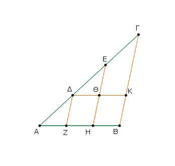
Παραλληλόγραμμον ἄρα ἐστὶν ἑκάτερον τῶν ΖΘ, ΘΒ· ἴση ἄρα ἡ μὲν ΔΘ τῇ ΖΗ, ἡ δὲ ΘΚ τῇ ΗΒ. καὶ ἐπεὶ τριγώνου τοῦ ΔΚΓ παρὰ μίαν τῶν πλευρῶν τὴν ΚΓ εὐθεῖα ἦκται ἡ ΘΕ, ἀνάλογον ἄρα ἐστὶν ὡς ἡ ΓΕ πρὸς τὴν ΕΔ, οὕτως ἡ ΚΘ πρὸς τὴν ΘΔ. ἴση δὲ ἡ μὲν ΚΘ τῇ ΒΗ, ἡ δὲ ΘΔ τῇ ΗΖ. ἔστιν ἄρα ὡς ἡ ΓΕ πρὸς τὴν ΕΔ, οὕτως ἡ ΒΗ πρὸς τὴν ΗΖ.
πάλιν, ἐπεὶ τριγώνου τοῦ ΑΗΕ παρὰ μίαν τῶν πλευρῶν τὴν ΗΕ ἦκται ἡ ΖΔ, ἀνάλογον ἄρα ἐστὶν ὡς ἡ ΕΔ πρὸς τὴν ΔΑ, οὕτως ἡ ΗΖ πρὸς τὴν ΖΑ. ἐδείχθη δὲ καὶ ὡς ἡ ΓΕ πρὸς τὴν ΕΔ, οὕτως ἡ ΒΗ πρὸς τὴν ΗΖ· ἔστιν ἄρα ὡς μὲν ἡ ΓΕ πρὸς τὴν ΕΔ, οὕτως ἡ ΒΗ πρὸς τὴν ΗΖ, ὡς δὲ ἡ ΕΔ πρὸς τὴν ΔΑ, οὕτως ἡ ΗΖ πρὸς τὴν ΖΑ.
῾Η ἄρα δοθεῖσα εὐθεῖα ἄτμητος ἡ ΑΒ τῇ δοθείσῃ εὐθείᾳ τετμημένῃ τῇ ΑΓ ὁμοίως τέτμηται· ὅπερ ἔδει ποιῆσαι·
Δύο δοθεισῶν εὐθειῶν τρίτην ἀνάλογον προσευρεῖν.
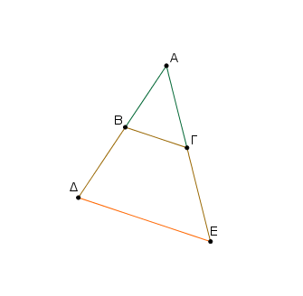
῎Εστωσαν αἱ δοθεῖσαι [δύο εὐθεῖαι] αἱ ΒΑ, ΑΓ καὶ κείσθωσαν γωνίαν περιέχουσαι τυχοῦσαν. δεῖ δὴ τῶν ΒΑ, ΑΓ τρίτην ἀνάλογον προσευρεῖν.
ἐκβεβλήσθωσαν γὰρ ἐπὶ τὰ Δ, Ε σημεῖα, καὶ κείσθω τῇ ΑΓ ἴση ἡ ΒΔ, καὶ ἐπεζεύχθω ἡ ΒΓ, καὶ διὰ τοῦ Δ παράλληλος αὐτῇ ἤχθω ἡ ΔΕ.
᾿Επεὶ οὖν τριγώνου τοῦ ΑΔΕ παρὰ μίαν τῶν πλευρῶν τὴν ΔΕ ἦκται ἡ ΒΓ, ἀνάλογόν ἐστιν ὡς ἡ ΑΒ πρὸς τὴν ΒΔ, οὕτως ἡ ΑΓ πρὸς τὴν ΓΕ. ἴση δὲ ἡ ΒΔ τῇ ΑΓ. ἔστιν ἄρα ὡς ἡ ΑΒ πρὸς τὴν ΑΓ, οὕτως ἡ ΑΓ πρὸς τὴν ΓΕ.
Δύο ἄρα δοθεισῶν εὐθειῶν τῶν ΑΒ, ΑΓ τρίτη ἀνάλογον αὐταῖς προσεύρηται ἡ ΓΕ· ὅπερ ἔδει ποιῆσαι.
Τριῶν δοθεισῶν εὐθειῶν τετάρτην ἀνάλογον προσευρεῖν.
῎Εστωσαν αἱ δοθεῖσαι τρεῖς εὐθεῖαι αἱ Α, Β, Γ· δεῖ δὴ τῶν Α, Β, Γ τετάρτην ἀνάλογον προσευρεῖν.
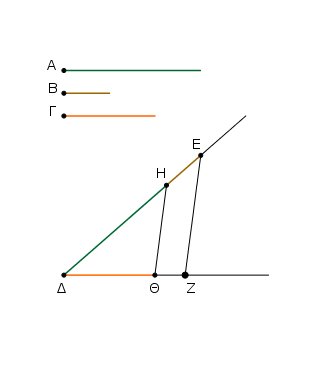
᾿Εκκείσθωσαν δύο εὐθεῖαι αἱ ΔΕ, ΔΖ γωνίαν περιέχουσαι [τυχοῦσαν] τὴν ὑπὸ ΕΔΖ· καὶ κείσθω τῇ μὲν Α ἴση ἡ ΔΗ, τῇ δὲ Β ἴση ἡ ΗΕ, καὶ ἔτι τῇ Γ ἴση ἡ ΔΘ· καὶ ἐπιζευχθείσης τῆς ΗΘ παράλληλος αὐτῇ ἤχθω διὰ τοῦ Ε ἡ ΕΖ.
᾿Επεὶ οὖν τριγώνου τοῦ ΔΕΖ παρὰ μίαν τὴν ΕΖ ἦκται ἡ ΗΘ, ἔστιν ἄρα ὡς ἡ ΔΗ πρὸς τὴν ΗΕ, οὕτως ἡ ΔΘ πρὸς τὴν ΘΖ. ἴση δὲ ἡ μὲν ΔΗ τῇ Α, ἡ δὲ ΗΕ τῇ Β, ἡ δὲ ΔΘ τῇ Γ· ἔστιν ἄρα ὡς ἡ Α πρὸς τὴν Β, οὕτως ἡ Γ πρὸς τὴν ΘΖ.
Τριῶν ἄρα δοθεισῶν εὐθειῶν τῶν Α, Β, Γ τετάρτη ἀνάλογον προσεύρηται ἡ ΘΖ· ὅπερ ἔδει ποιῆσαι.
Δύο δοθεισῶν εὐθειῶν μέσην ἀνάλογον προσευρεῖν.
῎Εστωσαν αἱ δοθεῖσαι δύο εὐθεῖαι αἱ ΑΒ, ΒΓ· δεῖ δὴ τῶν ΑΒ, ΒΓ μέσην ἀνάλογον προσευρεῖν.
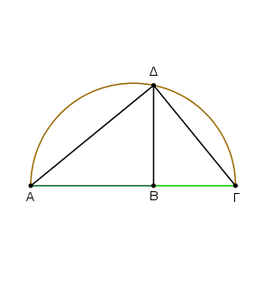
Κείσθωσαν ἐπ᾿ εὐθείας, καὶ γεγράφθω ἐπὶ τῆς ΑΓ ἡμικύκλιον τὸ ΑΔΓ, καὶ ἤχθω ἀπὸ τοῦ Β σημείου τῇ ΑΓ εὐθείᾳ πρὸς ὀρθὰς ἡ ΒΔ, καὶ ἐπεζεύχθωσαν αἱ ΑΔ, ΔΓ.
᾿Επεὶ ἐν ἡμικυκλίῳ γωνία ἐστὶν ἡ ὑπὸ ΑΔΓ, ὀρθή ἐστιν. καὶ ἐπεὶ ἐν ὀρθογωνίῳ τριγώνῳ τῷ ΑΔΓ ἀπὸ τῆς ὀρθῆς γωνίας ἐπὶ τὴν βάσιν κάθετος ἦκται ἡ ΔΒ, ἡ ΔΒ ἄρα τῶν τῆς βάσεως τμημάτων τῶν ΑΒ, ΒΓ μέση ἀνάλογόν ἐστιν.
Δύο ἄρα δοθεισῶν εὐθειῶν τῶν ΑΒ, ΒΓ μέση ἀνάλογον προσεύρηται ἡ ΔΒ· ὅπερ ἔδει ποιῆσαι.
Τῶν ἴσων τε καὶ ἴσογωνίων παραλληλογράμμων ἀντιπεπόνθασιν αἱ πλευραὶ αἱ περὶ τὰς ἴσας γωνίας· καὶ ὧν ἰσογωνίων παραλληλογράμμων ἀντιπεπόνθασιν αἱ πλευραὶ αἱ περὶ τὰς ἴσας γωνίας, ἴσα ἐστὶν ἐκεῖνα.
῎Εστω ἴσα τε καὶ ἰσογώνια παραλληλόγραμμα τὰ ΑΒ, ΒΓ ἴσας ἔχοντα τὰς πρὸς τῷ Β γωνίας, καὶ κείσθωσαν ἐπ᾿ εὐθείας αἱ ΔΒ, ΒΕ· ἐπ᾿ εὐθείας ἄρα εἰσὶ καὶ αἱ ΖΒ, ΒΗ. λέγω, ὅτι τῶν ΑΒ, ΒΓ ἀντιπεπόνθασιν αἱ πλευραὶ αἱ περὶ τὰς ἴσας γωνίας, τουτέστιν, ὅτι ἐστὶν ὡς ἡ ΔΒ πρὸς τὴν ΒΕ, οὕτως ἡ ΗΒ πρὸς τὴν ΒΖ.
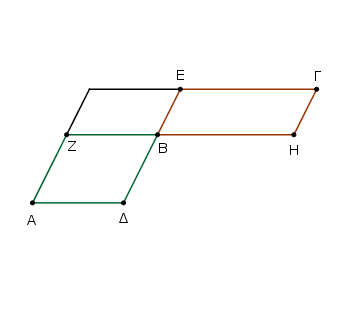
Συμπεπληρώσθω γὰρ τὸ ΖΕ παραλληλόγραμμον. ἐπεὶ οὖν ἴσον ἐστὶ τὸ ΑΒ παραλληλόγραμμον τῷ ΒΓ παραλληλογράμμῳ, ἄλλο δέ τι τὸ ΖΕ, ἔστιν ἄρα ὡς τὸ ΑΒ πρὸς τὸ ΖΕ, οὕτως τὸ ΒΓ πρὸς τὸ ΖΕ. ἀλλ᾿ ὡς μὲν τὸ ΑΒ πρὸς τὸ ΖΕ, οὕτως ἡ ΔΒ πρὸς τὴν ΒΕ, ὡς δὲ τὸ ΒΓ πρὸς τὸ ΖΕ, οὕτως ἡ ΗΒ πρὸς τὴν ΒΖ· καὶ ὡς ἄρα ἡ ΔΒ πρὸς τὴν ΒΕ, οὕτως ἡ ΗΒ πρὸς τὴν ΒΖ. τῶν ἄρα ΑΒ, ΒΓ παραλληλογράμμων ἀντιπεπόνθασιν αἱ πλευραὶ αἱ περὶ τὰς ἴσας γωνίας.
᾿Αλλὰ δὴ ἔστω ὡς ἡ ΔΒ πρὸς τὴν ΒΕ, οὕτως ἡ ΗΒ πρὸς τὴν ΒΖ· λέγω, ὅτι ἴσον ἐστὶ τὸ ΑΒ παραλληλόγραμμον τῷ ΒΓ παραλληλογράμμῳ.
᾿Επεὶ γάρ ἐστιν ὡς ἡ ΔΒ πρὸς τὴν ΒΕ, οὕτως ἡ ΗΒ πρὸς τὴν ΒΖ, ἀλλ᾿ ὡς μὲν ἡ ΔΒ πρὸς τὴν ΒΕ, οὕτως τὸ ΑΒ παραλληλόγραμμον πρὸς τὸ ΖΕ παραλληλόγραμμον, ὡς δὲ ἡ ΗΒ πρὸς τὴν ΒΖ, οὕτως τὸ ΒΓ παραλληλόγραμμον πρὸς τὸ ΖΕ παραλληλόγραμμον, καὶ ὡς ἄρα τὸ ΑΒ πρὸς τὸ ΖΕ, οὕτως τὸ ΒΓ πρὸς τὸ ΖΕ· ἴσον ἄρα ἐστὶ τὸ ΑΒ παραλληλόγραμμον τῷ ΒΓ παραλληλογράμμῳ.
Τῶν ἄρα ἴσων τε καὶ ἰσογωνίων παραλληλογράμμων ἀντιπεπόνθασιν αἱ πλευραὶ αἱ περὶ τὰς ἴσας γωνίας· καὶ ὧν ἰσογωνίων παραλληλογράμμων ἀντιπεπόνθασιν αἱ πλευραὶ αἱ περὶ τὰς ἴσας γωνίας, ἴσα ἐστὶν ἐκεῖνα· ὅπερ ἔδει δεῖξαι.
Τῶν ἴσων καὶ μίαν μιᾷ ἴσην ἐχόντων γωνίαν τριγώνων ἀντιπεπόνθασιν αἱ πλευραὶ αἱ περὶ τὰς ἴσας γωνίας· καὶ ὧν μίαν μιᾷ ἴσην ἐχόντων γωνίαν τριγώνων ἀντιπεπόνθασιν αἱ πλευραὶ αἱ περὶ τὰς ἴσας γωνίας, ἴσα ἐστὶν ἐκεῖνα.
῎Εστω ἴσα τρίγωνα τὰ ΑΒΓ, ΑΔΕ μίαν μιᾷ ἴσην ἔχοντα γωνίαν τὴν ὑπὸ ΒΑΓ τῇ ὑπὸ ΔΑΕ· λέγω, ὅτι τῶν ΑΒΓ, ΑΔΕ τριγώνων ἀντιπεπόνθασιν αἱ πλευραὶ αἱ περὶ τὰς ἴσας γωνίας, τουτέστιν, ὅτι ἐστὶν ὡς ἡ ΓΑ πρὸς τὴν ΑΔ, οὕτως ἡ ΕΑ πρὸς τὴν ΑΒ.
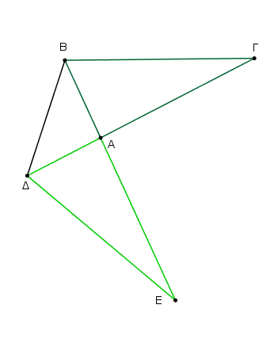
Κείσθω γὰρ ὥστε ἐπ᾿ εὐθείας εἶναι τὴν ΓΑ τῇ ΑΔ· ἐπ᾿ εὐθείας ἄρα ἐστὶ καὶ ἡ ΕΑ τῇ ΑΒ. καὶ ἐπεζεύχθω ἡ ΒΔ.
᾿Επεὶ οὖν ἴσον ἐστὶ τὸ ΑΒΓ τρίγωνον τῷ ΑΔΕ τριγώνῳ, ἄλλο δέ τι τὸ ΒΑΔ, ἔστιν ἄρα ὡς τὸ ΓΑΒ τρίγωνον πρὸς τὸ ΒΑΔ τρίγωνον, οὕτως τὸ ΕΑΔ τρίγωνον πρὸς τὸ ΒΑΔ τρίγωνον. ἀλλ᾿ ὡς μὲν τὸ ΓΑΒ πρὸς τὸ ΒΑΔ, οὕτως ἡ ΓΑ πρὸς τὴν ΑΔ, ὡς δὲ τὸ ΕΑΔ πρὸς τὸ ΒΑΔ, οὕτως ἡ ΕΑ πρὸς τὴν ΑΒ. καὶ ὡς ἄρα ἡ ΓΑ πρὸς τὴν ΑΔ, οὕτως ἡ ΕΑ πρὸς τὴν ΑΒ. τῶν ΑΒΓ, ΑΔΕ ἄρα τριγώνων ἀντιπεπόνθασιν αἱ πλευραὶ αἱ περὶ τὰς ἴσας γωνίας.
᾿Αλλὰ δὴ ἀντιπεπονθέτωσαν αἱ πλευραὶ τῶν ΑΒΓ, ΑΔΕ τριγώνων, καὶ ἔστω ὡς ἡ ΓΑ πρὸς τὴν ΑΔ, οὕτως ἡ ΕΑ πρὸς τὴν ΑΒ· λέγω, ὅτι ἴσον ἐστὶ τὸ ΑΒΓ τρίγωνον τῷ ΑΔΕ τριγώνῳ.
᾿Επιζευχθείσης γὰρ πάλιν τῆς ΒΔ, ἐπεί ἐστιν ὡς ἡ ΓΑ πρὸς τὴν ΑΔ, οὕτως ἡ ΕΑ πρὸς τὴν ΑΒ, ἀλλ᾿ ὡς μὲν ἡ ΓΑ πρὸς τὴν ΑΔ, οὕτως τὸ ΑΒΓ τρίγωνον πρὸς τὸ ΒΑΔ τρίγωνον, ὡς δὲ ἡ ΕΑ πρὸς τὴν ΑΒ, οὕτως τὸ ΕΑΔ τρίγωνον πρὸς τὸ ΒΑΔ τρίγωνον, ὡς ἄρα τὸ ΑΒΓ τρίγωνον πρὸς τὸ ΒΑΔ τρίγωνον, οὕτως τὸ ΕΑΔ τρίγωνον πρὸς τὸ ΒΑΔ τρίγωνον. ἑκάτερον ἄρα τῶν ΑΒΓ, ΕΑΔ πρὸς τὸ ΒΑΔ τὸν αὐτὸν ἔχει λόγον. ἴσων ἄρα ἐστὶ τὸ ΑΒΓ [τρίγωνον] τῷ ΕΑΔ τριγώνῳ.
Τῶν ἄρα ἴσων καὶ μίαν μιᾷ ἴσην ἐχόντων γωνίαν τριγώνων ἀντιπεπόνθασιν αἱ πλευραὶ αἱ περὶ τὰς ἴσας γωνίας· καὶ ὧς μίαν μιᾷ ἴσην ἐχόντων γωνίαν τριγώνων ἀντιπεπόνθασιν αἱ πλευραὶ αἱ περὶ τὰς ἴσας γωνίας, ἐκεῖνα ἴσα ἐστὶν· ὅπερ ἔδει δεῖξαι.
᾿Εὰν τέσσαρες εὐθεῖαι ἀνάλογον ὦσιν, τὸ ὑπὸ τῶν ἄκρων περιεχόμενον ὀρθογώνιον ἴσον ἐστὶ τῷ ὑπὸ τῶν μέσων περιεχομένῳ ὀρθογωνίῳ· κἂν τὸ ὑπὸ τῶν ἄκρων περιεχόμενον ὀρθογώνιον ἴσον ᾖ τῷ ὑπὸ τῶν μέσων περιεχομένῳ ὀρθογωνίῳ, αἱ τέσσαρες εὐθεῖαι ἀνάλογον ἔσονται.
῎Εστωσαν τέσσαρες εὐθεῖαι ἀνάλογον αἱ ΑΒ, ΓΔ, Ε, Ζ, ὡς ἡ ΑΒ πρὸς τὴν ΓΔ, οὕτως ἡ Ε πρὸς τὴν Ζ· λέγω, ὅτι τὸ ὑπὸ τῶν ΑΒ, Ζ περιεχόμενον ὀρθογώνιον ἴσον ἐστὶ τῷ ὑπὸ τῶν ΓΔ, Ε περιεχομένῳ ὀρθογωνίῳ.
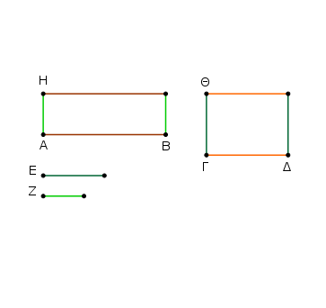
῎Ηχθωσαν [γὰρ] ἀπὸ τῶν Α, Γ σημείων ταῖς ΑΒ, ΓΔ εὐθείαις πρὸς ὀρθὰς αἱ ΑΗ, ΓΘ, καὶ κείσθω τῇ μὲν Ζ ἴση ἡ ΑΗ, τῇ δὲ Ε ἴση ἡ ΓΘ. καὶ συμπεπληρώσθω τὰ ΒΗ, ΔΘ παραλληλόγραμμα.
Καὶ ἐπεί ἐστιν ὡς ἡ ΑΒ πρὸς τὴν ΓΔ, οὕτως ἡ Ε πρὸς τὴν Ζ, ἴση δὲ ἡ μὲν Ε τῇ ΓΘ, ἡ δὲ Ζ τῇ ΑΗ, ἔστιν ἄρα ὡς ἡ ΑΒ πρὸς τὴν ΓΔ, οὕτως ἡ ΓΘ πρὸς τὴν ΑΗ. τῶν ΒΗ, ΔΘ ἄρα παραλληλογράμμων ἀντιπεπόνθασιν αἱ πλευραὶ αἱ περὶ τὰς ἴσας γωνίας. ὧν δὲ ἰσογωνίων παραλληλογράμμων ἀντιπεπόνθασιν αἱ πλευραί αἱ περὶ τὰς ἴσας γωνάις, ἴσα ἐστὶν ἐκεῖνα· ἴσον ἄρα ἐστὶ τὸ ΒΗ παραλληλόγραμμον τῷ ΔΘ παραλληλογράμμῳ.
καί ἐστι τὸ μὲν ΒΗ τὸ ὑπὸ τῶν ΑΒ, Ζ· ἴση γὰρ ἡ ΑΗ τῇ Ζ· τὸ δὲ ΔΘ τὸ ὑπὸ τῶν ΓΔ, Ε· ἴση γὰρ ἡ Ε τῇ ΓΘ· τὸ ἄρα ὑπὸ τῶν ΑΒ, Ζ περιεχόμενον ὀρθογώνιον ἴσον ἐστὶ τῷ ὑπὸ τῶν ΓΔ, Ε περιεχομένῳ ὀρθογώνιῳ.
᾿Αλλὰ δὴ τὸ ὑπὸ τῶν ΑΒ, Ζ περιεχόμενον ὀρθογώνιον ἴσον ἔστω τῷ ὑπὸ τῶν ΓΔ, Ε περιεχομένῳ ὀρθογωνίῳ. λέγω, ὅτι αἱ τέσσαρες εὐθεῖαι ἀνάλογον ἔσονται, ὡς ἡ ΑΒ πρὸς τὴν ΓΔ, οὕτως ἡ Ε πρὸς τὴν Ζ.
Τῶν γὰρ αὐτῶν κατασκευασθέντων, ἐπεὶ τὸ ὑπὸ τῶν ΑΒ, Ζ ἴσον ἐστὶ τῷ ὑπὸ τῶν ΓΔ, Ε, καί ἐστι τὸ μὲν ὑπὸ τῶν ΑΒ, Ζ τὸ ΒΗ· ἴση γάρ ἐστιν ἡ ΑΗ τῇ Ζ· τὸ δὲ ὑπὸ τῶν ΓΔ, Ε τὸ ΔΘ· ἴση γὰρ ἡ ΓΘ τῇ Ε· τὸ ἄρα ΒΗ ἴσον ἐστὶ τῷ ΔΘ. καί ἐστιν ἰσογώνια. τῶν δὲ ἴσων καὶ ἰσογωνίων παραλληλογράμμων ἀντιπεπόνθασιν αἱ πλευραὶ αἱ περὶ τὰς ἴσας γωνίας. ἔστιν ἄρα ὡς ἡ ΑΒ πρὸς τὴν ΓΔ, οὕτως ἡ ΓΘ πρὸς τὴν ΑΗ. ἴση δὲ ἡ μὲν ΓΘ τῇ Ε, ἡ δὲ ΑΗ τῇ Ζ· ἔστιν ἄρα ὡς ἡ ΑΒ πρὸς τὴν ΓΔ, οὕτως ἡ Ε πρὸς τὴν Ζ.
᾿Εὰν ἄρα τέσσαρες εὐθεῖαι ἀνάλογον ὦσιν, τὸ ὑπὸ τῶν ἄκρων περιεχόμενον ὀρθογώνιον ἴσον ἐστὶ τῷ ὑπὸ τῶν μέσων περιεχομένῳ ὀρθογωνίῳ· κἂν τὸ ὑπὸ τῶν ἄκρων περιεχόμενον ὀρθογώνιον ἴσον ᾖ τῷ ὑπὸ τῶν μέσων περιεχομένῳ ὀρθογωνίῳ, αἱ τέσσαρες εὐθεῖαι ἀνάλογον ἔσονται· ὅπερ ἔδει δεῖξαι.
᾿Εὰν τρεῖς εὐθεῖαι ἀνάλογον ὦσιν, τὸ ὑπὸ τῶν ἄκρων περιεχόμενον ὀρθογώνιον ἴσον ἐστὶ τῷ ἀπὸ τῆς μέσης τετραγώνῳ· κἂν τὸ ὑπὸ τῶν ἄκρων περιεχόμενον ὀρθογώνιον ἴσον ᾖ τῷ ἀπὸ τῆς μέσης τετραγώνῳ, αἱ τρεῖς εὐθεῖαι ἀνάλογον ἔσονται.
῎Εστωσαν τρεῖς εὐθεῖαι ἀνάλογον αἱ Α, Β, Γ, ὡς ἡ Α πρὸς τὴν Β, οὕτως ἡ Β πρὸς τὴν Γ· λέγω, ὅτι τὸ ὑπὸ τῶν Α, Γ περιεχόμενον ὀρθογώνιον ἴσον ἐστὶ τῷ ἀπὸ τῆς Β τετραγώνῳ.
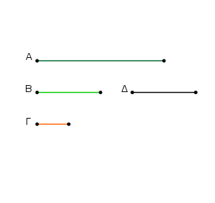
Κείσθω τῇ Β ἴση ἡ Δ. Καὶ ἐπεί ἐστιν ὡς ἡ Α πρὸς τὴν Β, οὕτως ἡ Β πρὸς τὴν Γ, ἴση δὲ ἡ Β τῇ Δ, ἔστιν ἄρα ὡς ἡ Α πρὸς τὴν Β, ἡ Δ πρὸς τὴν Γ. ἐὰν δὲ τέσσαρες εὐθεῖαι ἀνάλογον ὦσιν, τὸ ὑπὸ τῶν ἄκρων περιεχόμενον [ὀρθογώνιον] ἴσον ἐστὶ τῷ ὑπὸ τῶν μέσων περιεχομένῳ ὀρθογωνίῳ. τὸ ἄρα ὑπὸ τῶν Α, Γ ἴσον ἐστὶ τῷ ὑπὸ τῶν Β, Δ. ἀλλὰ τὸ ὑπὸ τῶν Β, Δ τὸ ἀπὸ τῆς Β ἐστιν· ἴση γὰρ ἡ Β τῇ Δ· τὸ ἄρα ὑπὸ τῶν Α, Γ περιεχόμενον ὀρθογώνιον ἴσον ἐστὶ τῷ ἀπὸ τῆς Β τετραγώνῳ.
᾿Αλλὰ δὴ τὸ ὑπὸ τῶν Α, Γ ἴσον ἔστω τῷ ἀπὸ τῆς Β· λέγω, ὅτι ἐστὶν ὡς ἡ Α πρὸς τὴν Β, οὕτως ἡ Β πρὸς τὴν Γ. Τῶν γὰρ αὐτῶν κατασκευασθέντων, ἐπεὶ τὸ ὑπὸ τῶν Α, Γ ἴσον ἐστὶ τῷ ἀπὸ τῆς Β, ἀλλὰ τὸ ἀπὸ τῆς Β τὸ ὑπὸ τῶν Β, Δ ἐστιν· ἴση γὰρ ἡ Β τῇ Δ· τὸ ἄρα ὑπὸ τῶν Α, Γ ἴσον ἐστὶ τῷ ὑπὸ τῶν Β, Δ. ἐὰν δὲ τὸ ὑπὸ τῶν ἄκρων ἴσον ᾖ τῷ ὑπὸ τῶν μέσων, αἱ τέσσαρες εὐθεῖαι ἀνάλογόν εἰσιν. ἔστιν ἄρα ὡς ἡ Α πρὸς τὴν Β, οὕτως ἡ Δ πρὸς τὴν Γ. ἴση δὲ ἡ Β τῇ Δ· ὡς ἄρα ἡ Α πρὸς τὴν Β, οὕτως ἡ Β πρὸς τὴν Γ.
᾿Εὰν ἄρα τρεῖς εὐθεῖαι ἀνάλογον ὦσιν, τὸ ὑπὸ τῶν ἄκρων περιεχόμενον ὀρθογώνιον ἴσον ἐστὶ τῷ ἀπὸ τῆς μέσης τετραγώνῳ· κἂν τὸ ὑπὸ τῶν ἄκρων περιεχόμενον ὀρθογώνιον ἴσον ᾖ τῷ ἀπὸ τῆς μέσης τετραγώνῳ, αἱ τρεῖς εὐθεῖαι ἀνάλογον ἔσονται· ὅπερ ἔδει δεῖξαι.
᾿Απὸ τῆς δοθείσης εὐθείας τῷ δοθέντι εὐθυγράμμῳ ὅμοιόν τε καὶ ὁμοίως κείμενον εὐθύγραμμον ἀναγράψαι.
῎Εστω ἡ μὲν δοθεῖσα εὐθεῖα ἡ ΑΒ, τὸ δὲ δοθὲν εὐθύγραμμον τὸ ΓΕ· δεῖ δὴ ἀπὸ τῆς ΑΒ εὐθείας τῷ ΓΕ εὐθυγράμμῳ ὅμοιόν τε καὶ ὁμοίως κείμενον εὐθύγραμμον ἀναγράψαι.
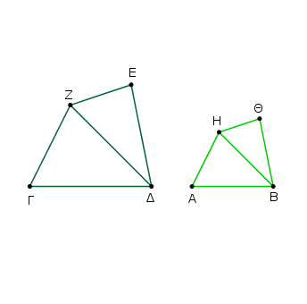
᾿Επεζεύχθω ἡ ΔΖ, καὶ συνεστάτω πρὸς τῇ ΑΒ εὐθείᾳ καὶ τοῖς πρὸς αὐτῇ σημείοις τοῖς Α, Β τῇ μὲν πρὸς τῷ Γ γωνίᾳ ἴση ἡ ὑπὸ ΗΑΒ, τῇ δὲ ὑπὸ ΓΔΖ ἴση ἡ ὑπὸ ΑΒΗ. λοιπὴ ἄρα ἡ ὑπὸ ΓΖΔ τῇ ὑπὸ ΑΗΒ ἐστιν ἴση· ἰσογώνιον ἄρα ἐστὶ τὸ ΖΓΔ τρίγωνον τῷ ΗΑΒ τριγώνῳ. ἀνάλογον ἄρα ἐστὶν ὡς ἡ ΖΔ πρὸς τὴν ΗΒ, οὕτως ἡ ΖΓ πρὸς τὴν ΗΑ, καὶ ἡ ΓΔ πρὸς τὴν ΑΒ.
πάλιν συνεστάτω πρὸς τῇ ΒΗ εὐθείᾳ καὶ τοῖς πρὸς αὐτῇ σημείοις τοῖς Β, Η τῇ μὲν ὑπὸ ΔΖΕ γωνίᾳ ἴση ἡ ὑπὸ ΒΗΘ, τῇ δὲ ὑπὸ ΖΔΕ ἴση ἡ ὑπὸ ΗΒΘ. λοιπὴ ἄρα ἡ πρὸς τῷ Ε λοιπῇ τῇ πρὸς τῷ Θ ἐστιν ἴση· ἰσογώνιον ἄρα ἐστὶ τὸ ΖΔΕ τρίγωνον τῷ ΗΘΒ τριγώνῳ· ἀνάλογον ἄρα ἐστὶν ὡς ἡ ΖΔ πρὸς τὴν ΗΒ, οὕτως ἡ ΖΕ πρὸς τὴν ΗΘ καὶ ἡ ΕΔ πρὸς τὴν ΘΒ.
ἐδείχθη δὲ καὶ ὡς ἡ ΖΔ πρὸς τὴν ΗΒ, οὕτως ἡ ΖΓ πρὸς τὴν ΗΑ καὶ ἡ ΓΔ πρὸς τὴν ΑΒ· καὶ ὡς ἄρα ἡ ΖΓ πρὸς τὴν ΑΗ, οὕτως ἥ τε ΓΔ πρὸς τὴν ΑΒ καὶ ἡ ΖΕ πρὸς τὴν ΗΘ καὶ ἔτι ἡ ΕΔ πρὸς τὴν ΘΒ.
καὶ ἐπεὶ ἴση ἐστὶν ἡ μὲν ὑπὸ ΓΖΔ γωνία τῇ ὑπὸ ΑΗΒ, ἡ δὲ ὑπὸ ΔΖΕ τῇ ὑπὸ ΒΗΘ, ὅλη ἄρα ἡ ὑπὸ ΓΖΕ ὅλῃ τῇ ὑπὸ ΑΗΘ ἐστιν ἴση. διὰ τὰ αὐτὰ δὴ καὶ ἡ ὑπὸ ΓΔΕ τῇ ὑπὸ ΑΒΘ ἐστιν ἴση. ἔστι δὲ καὶ ἡ μὲν πρὸς τῷ Γ τῇ πρὸς τῷ Α ἴση, ἡ δὲ πρὸς τῷ Ε τῇ πρὸς τῷ Θ. ἰσογώνιον ἄρα ἐστὶ τὸ ΑΘ τῷ ΓΕ· καὶ τὰς περὶ τὰς ἴσας γωνίας αὐτῶν πλευρὰς ἀνάλογον ἔχει· ὅμοιον ἄρα ἐστὶ τὸ ΑΘ εὐθύγραμμον τῷ ΓΕ εὐθυγράμμῳ.
᾿Απὸ τῆς δοθείσης ἄρα εὐθείας τῆς ΑΒ τῷ δοθέντι εὐθυγράμμῳ τῷ ΓΕ ὅμοιόν τε καὶ ὁμοίως κείμενον εὐθύγραμμον ἀναγέγραπται τὸ ΑΘ· ὅπερ ἔδει ποιῆσαι.
Τὰ ὅμοια τρίγωνα πρὸς ἄλληλα ἐν διπλασίονι λόγῳ ἐστὶ τῶν ὁμολόγων πλευρῶν.
῎Εστω ὅμοια τρίγωνα τὰ ΑΒΓ, ΔΕΖ ἴσην ἔχοντα τὴν πρὸς τῷ Β γωνίαν τῇ πρὸς τῷ Ε, ὡς δὲ τὴν ΑΒ πρὸς τὴν ΒΓ, οὕτως τὴν ΔΕ πρὸς τὴν ΕΖ, ὥστε ὁμόλογον εἶναι τὴν ΒΓ τῇ ΕΖ· λέγω, ὅτι τὸ ΑΒΓ τρίγωνον πρὸς τὸ ΔΕΖ τρίγωνον διπλασίονα λόγον ἔχει ἤπερ ἡ ΒΓ πρὸς τὴν ΕΖ.
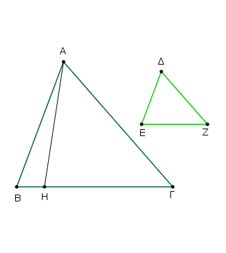
Εἰλήφθω γὰρ τῶν ΒΓ, ΕΖ τρίτη ἀνάλογον ἡ ΒΗ, ὥστε εἶναι ὡς τὴν ΒΓ πρὸς τὴν ΕΖ, οὕτως τὴν ΕΖ πρὸς τὴν ΒΗ· καὶ ἐπεζεύχθω ἡ ΑΗ.
᾿Επεὶ οὖν ἐστιν ὡς ἡ ΑΒ πρὸς τὴν ΒΓ, οὕτως ἡ ΔΕ πρὸς τὴν ΕΖ, ἐναλλὰξ ἄρα ἐστὶν ὡς ἡ ΑΒ πρὸς τὴν ΔΕ, οὕτως ἡ ΒΓ πρὸς τὴν ΕΖ. ἀλλ᾿ ὡς ἡ ΒΓ πρὸς ΕΖ, οὕτως ἐστιν ἡ ΕΖ πρὸς ΒΗ. καὶ ὡς ἄρα ἡ ΑΒ πρὸς ΔΕ, οὕτως ἡ ΕΖ πρὸς ΒΗ·
τῶν ΑΒΗ, ΔΕΖ ἄρα τριγώνων ἀντιπεπόνθασιν αἱ πλευραὶ αἱ περὶ τὰς ἴσας γωνάις. ὧν δὲ μίαν μιᾷ ἴσην ἐχόντων γωνίαν τριγώνων ἀντιπεπόνθασιν αἱ πλευραὶ αἱ περὶ τὰς ἴσας γωνάις, ἴσα ἐστὶν ἐκεῖνα. ἴσον ἄρα ἐστὶ τὸ ΑΒΗ τρίγωνον τῷ ΔΕΖ τριγώνῳ. καὶ ἐπεί ἐστιν ὡς ἡ ΒΓ πρὸς τὴν ΕΖ, οὕτως ἡ ΕΖ πρὸς τὴν ΒΗ, ἐὰν δὲ τρεῖς εὐθεῖαι ἀνάλογον ὦσιν, ἡ πρώτη πρὸς τὴν τρίτην διπλασίονα λόγον ἔχει ἤπερ πρὸς τὴν δευτέραν, ἡ ΒΓ ἄρα πρὸς τὴν ΒΗ διπλασίονα λόγον ἔχει ἤπερ ἡ ΓΒ πρὸς τὴν ΕΖ. ὡς δὲ ἡ ΓΒ πρὸς τὴν ΒΗ, οὕτως τὸ ΑΒΓ τρίγωνον πρὸς τὸ ΑΒΗ τρίγωνον· καὶ τὸ ΑΒΓ ἄρα τρίγωνον πρὸς τὸ ΑΒΗ διπλασίονα λόγον ἔχει ἤπερ ἡ ΒΓ πρὸς τὴν ΕΖ.
ἴσον δὲ τὸ ΑΒΗ τρίγωνον τῷ ΔΕΖ τριγώνῳ. καὶ τὸ ΑΒΓ ἄρα τρίγωνον πρὸς τὸ ΔΕΖ τρίγωνον διπλασίονα λόγον ἔχει ἤπερ ἡ ΒΓ πρὸς τὴν ΕΖ.
Τὰ ἄρα ὅμοια τρίγωνα πρὸς ἄλληλα ἐν διπλασίονι λόγῳ ἐστὶ τῶν ὁμολόγων πλευρῶν. [ὅπερ ἔδει δεῖξαι.]
Πόρισμα ᾿Εκ δὴ τούτου φανερόν, ὅτι, ἐὰν τρεῖς εὐθεῖαι ἀνάλογον ὦσιν, ἔστιν ὡς ἡ πρώτη πρὸς τὴν τρίτην, οὕτως τὸ ἀπὸ τῆς πρώτης εἶδος πρὸς τὸ ἀπὸ τῆς δευτέρας τὸ ὅμοιον καὶ ὁμοίως ἀναγραφόμενον. ὅπερ ἔδει δεῖξαι.
Τὰ ὅμοια πολύγωνα εἴς τε ὅμοια τρίγωνα διαιρεῖται καὶ εἰς ἴσα τὸ πλῆθος καὶ ὁμόλογα τοῖς ὅλοις, καὶ τὸ πολύγωνον πρὸς τὸ πολύγωνον διπλασίονα λόγον ἔχει ἤπερ ἡ ὁμόλογος πλευρὰ πρὸς τὴν ὁμόλογον πλευράν.
῎Εστω ὅμοια πολύγωνα τὰ ΑΒΓΔΕ, ΖΗΘΚΛ, ὁμόλογος δὲ ἔστω ἡ ΑΒ τῇ ΖΗ· λέγω, ὅτι τὰ ΑΒΓΔΕ, ΖΗΘΚΛ πολύγωνα εἴς τε ὅμοια τρίγωνα διαιρεῖται καὶ εἰς ἴσα τὸ πλῆθος καὶ ὁμόλογα τοῖς ὅλοις, καὶ τὸ ΑΒΓΔΕ πολύγωνον πρὸς τὸ ΖΗΘΚΛ πολύγωνον διπλασίονα λόγον ἔχει ἤπερ ἡ ΑΒ πρὸς τὴν ΖΗ.
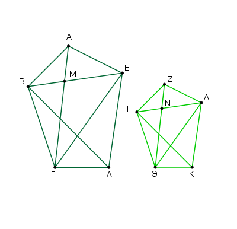
᾿Επεζεύχθωσαν αἱ ΒΕ, ΕΓ, ΗΛ, ΛΘ. Καὶ ἐπεὶ ὅμοιόν ἐστι τὸ ΑΒΓΔΕ πολύγωνον τῷ ΖΗΘΚΛ πολυγώνῳ, ἴση ἐστὶν ἡ ὑπὸ ΒΑΕ γωνία τῇ ὑπὸ ΗΖΛ. καί ἐστιν ὡς ἡ ΒΑ πρὸς ΑΕ, οὕτως ἡ ΗΖ πρὸς ΖΛ.
ἐπεὶ οὖν δύο τρίγωνά ἐστι τὰ ΑΒΕ, ΖΗΛ μίαν γωνίαν μιᾷ γωνίᾳ ἴσην ἔχοντα, περὶ δὲ τὰς ἴσας γωνίας τὰς πλευρὰς ἀνάλογον, ἰσογώνιον ἄρα ἐστὶ τὸ ΑΒΕ τρίγωνον τῷ ΖΗΛ τριγώνῳ· ὥστε καὶ ὅμοιον· ἴση ἄρα ἐστὶν ἡ ὑπὸ ΑΒΕ γωνία τῇ ὑπὸ ΖΗΛ. ἔστι δὲ καὶ ὅλη ἡ ὑπὸ ΑΒΓ ὅλῃ τῇ ὑπὸ ΖΗΘ ἴση διὰ τὴν ὁμοιότητα τῶν πολυγώνων· λοιπὴ ἄρα ἡ ὑπὸ ΕΒΓ γωνία τῇ ὑπὸ ΛΗΘ ἐστιν ἴση.
καὶ ἐπεὶ διὰ τὴν ὁμοιότητα τῶν ΑΒΕ, ΖΗΛ τριγώνων ἐστὶν ὡς ἡ ΕΒ πρὸς ΒΑ, οὕτως ἡ ΛΗ πρὸς ΗΖ, ἀλλὰ μὴν καὶ διὰ τὴν ὁμοιότητα τῶν πολυγώνων ἐστὶν ὡς ἡ ΑΒ πρὸς ΒΓ, οὕτως ἡ ΖΗ πρὸς ΗΘ, δι᾿ ἴσου ἄρα ἐστὶν ὡς ἡ ΕΒ πρὸς ΒΓ, οὕτως ἡ ΛΗ πρὸς ΗΘ, καὶ περὶ τὰς ἴσας γωνάις τὰς ὑπὸ ΕΒΓ, ΛΗΘ αἱ πλευραὶ ἀνάλογόν εἰσιν· ἰσογώνιον ἄρα ἐστὶ τὸ ΕΒΓ τρίγωνον τῷ ΛΗΘ τριγώνῳ· ὥστε καὶ ὅμοιόν ἐστι τὸ ΕΒΓ τρίγωνον τῷ ΛΗΘ τριγώνω. διὰ τὰ αὐτὰ δὴ καὶ τὸ ΕΓΔ τρίγωνον ὅμοιόν ἐστι τῷ ΛΘΚ τριγώνῳ. τὰ ἄρα ὅμοια πολύγωνα τὰ ΑΒΓΔΕ, ΖΗΘΚΛ εἴς τε ὅμοια τρίγωνα διῄρηται καὶ εἰς ἴσα
τὸ πλῆθος.
Λέγω, ὅτι καὶ ὁμόλογα τοῖς ὅλοις, τουτέστιν ὥστε ἀνάλογον εἶναι τὰ τρίγωνα, καὶ ἡγούμενα μὲν εἶναι τὰ ΑΒΕ, ΕΒΓ, ΕΓΔ, ἑπόμενα δὲ αὐτῶν τὰ ΖΗΛ, ΛΗΘ, ΛΘΚ, καὶ ὅτι τὸ ΑΒΓΔΕ πολύγωνον πρὸς τὸ ΖΗΘΚΛ πολύγωνον διπλασίονα λόγον ἔχει ἤπερ ἡ ὁμόλογος πλευρὰ πρὸς τὴν ὁμόλογον πλευράν, τουτέστιν ἡ ΑΒ πρὸς τὴν ΖΗ.
᾿Επεζεύχθωσαν γὰρ αἱ ΑΓ, ΖΘ. καὶ ἐπεὶ διὰ τὴν ὁμοιότητα τῶν πολυγώνων ἴση ἐστὶν ἡ ὑπὸ ΑΒΓ γωνία τῇ ὑπὸ ΖΗΘ, καί ἐστιν ὡς ἡ ΑΒ πρὸς ΒΓ, οὕτως ἡ ΖΗ πρὸς ΗΘ, ἰσογώνιόν ἐστι τὸ ΑΒΓ τρίγωνον τῷ ΖΗΘ τριγώνῳ· ἴση ἄρα ἐστὶν ἡ μὲν ὑπὸ ΒΑΓ γωνία τῇ ὑπὸ ΗΖΘ, ἡ δὲ ὑπὸ ΒΓΑ τῇ ὑπὸ ΗΘΖ. καὶ ἐπεὶ ἴση ἐστὶν ἡ ὑπὸ ΒΑΜ γωνία τῇ ὑπὸ ΗΖΝ, ἔστι δὲ καὶ ἡ ὑπὸ ΑΒΜ τῇ ὑπὸ ΖΗΝ ἴση, καὶ λοιπὴ ἄρα ἡ ὑπὸ ΑΜΒ λοιπῇ τῇ ὑπὸ ΖΝΗ ἴση ἐστίν· ἰσογώνιον ἄρα ἐστὶ τὸ ΑΒΜ τρίγωνον τῷ ΖΗΝ τριγώνῳ.
ὁμοίως δὴ δεῖξομεν, ὅτι καὶ τὸ ΒΜΓ τρίγωνον ἰσογώνιόν ἐστι τῷ ΗΝΘ τριγώνῳ. ἀνάλογον ἄρα ἐστίν, ὡς μὲν ἡ ΑΜ πρὸς ΜΒ, οὕτως ἡ ΖΝ πρὸς ΝΗ, ὡς δὲ ἡ ΒΜ πρὸς ΜΓ, οὕτως ἡ ΗΝ πρὸς ΝΘ· ὥστε καὶ δι᾿ ἴσου, ὡς ἡ ΑΜ πρὸς ΜΓ, οὕτως ἡ ΖΝ πρὸς ΝΘ. ἀλλ᾿ ὡς ἡ ΑΜ πρὸς ΜΓ, οὕτως τὸ ΑΒΜ [τρίγωνον] πρὸς τὸ ΜΒΓ, καὶ τὸ ΑΜΕ πρὸς τὸ ΕΜΓ· πρὸς ἄλληλα γάρ εἰσιν ὡς αἱ βάσεις. καὶ ὡς ἄρα ἓν τῶν ἡγουμένων πρὸς ἓν τῶν ἑπόμενων, οὕτως ἅπαντα τὰ ἡγούμενα πρὸς ἅπαντα τὰ ἑπόμενα· ὡς ἄρα τὸ ΑΜΒ τρίγωνον πρὸς τὸ ΒΜΓ, οὕτως τὸ ΑΒΕ πρὸς τὸ ΓΒΕ. αλλ᾿ ὡς τὸ ΑΜΒ πρὸς τὸ ΒΜΓ, οὕτως ἡ ΑΜ πρὸς ΜΓ· καὶ ὡς ἄρα ἡ ΑΜ πρὸς ΜΓ, οὕτως τὸ ΑΒΕ τρίγωνον πρὸς τὸ ΕΒΓ τρίγωνον. διὰ τὰ αὐτὰ δὴ καὶ ὡς ἡ ΖΝ πρὸς ΝΘ, οὕτως τὸ ΖΗΛ τρίγωνον πρὸς τὸ ΗΛΘ τρίγωνον. καί ἐστιν ὡς ἡ ΑΜ πρὸς ΜΓ, οὕτως ἡ ΖΝ πρὸς ΝΘ· καὶ ὡς ἄρα τὸ ΑΒΕ τρίγωνον πρὸς τὸ ΒΕΓ τρίγωνον, οὕτως τὸ ΖΗΛ τρίγωνον πρὸς τὸ ΗΛΘ τρίγωνον, καὶ ἐναλλὰξ ὡς τὸ ΑΒΕ τρίγωνον πρὸς τὸ ΖΗΛ τρίγωνον, οὕτως τὸ ΒΕΓ τρίγωνον πρὸς τὸ ΗΛΘ τρίγωνον.
ὁμοίως δὴ δείξομεν ἐπιζευχθεισῶν τῶν ΒΔ, ΗΚ, ὅτι καὶ ὡς τὸ ΒΕΓ τρίγωνον πρὸς τὸ ΛΗΘ τρίγωνον, οὕτως τὸ ΕΓΔ τρίγωνον πρὸς τὸ ΛΘΚ τρίγωνον. καὶ ἐπεί ἐστιν ὡς τὸ ΑΒΕ τρίγωνον πρὸς τὸ ΖΗΛ τρίγωνον, οὕτως τὸ ΕΒΓ πρὸς τὸ ΛΗΘ, καὶ ἔτι τὸ ΕΓΔ πρὸς τὸ ΛΘΚ, καὶ ὡς ἄρα ἓν τῶν ἡγουμένων πρὸς ἓν τῶν ἑπομένων, οὕτως ἅπαντα τὰ ἡγούμενα πρὸς ἅπαντα τὰ ἑπόμενα· ἔστιν ἄρα ὡς τὸ ΑΒΕ τρίγωνον πρὸς τὸ ΖΗΛ τρίγωνον, οὕτως τὸ ΑΒΓΔΕ πολύγωνον πρὸς τὸ ΖΗΘΚΛ πολύγωνον. ἀλλὰ τὸ ΑΒΕ τρίγωνον πρὸς τὸ ΖΗΛ τρίγωνον διπλασίονα λόγον ἔχει ἤπερ ἡ ΑΒ ὁμόλογος πλευρὰ πρὸς τὴν ΖΗ ὁμόλογον πλευράν· τὰ γὰρ ὅμοια τρίγωνα ἐν διπλασίονι λόγῳ ἐστὶ τῶν ὁμολόγων πλευρῶν. καὶ τὸ ΑΒΓΔΕ ἄρα πολύγωνον πρὸς τὸ ΖΗΘΚΛ πολύγωνον διπλασίονα λόγον ἔχει ἤπερ ἡ ΑΒ ὁμόλογος πλευρὰ πρὸς τὴν ΖΗ ὁμόλογον πλευράν.
Τὰ ἄρα ὅμοια πολύγωνα εἴς τε ὅμοια τρίγωνα διαιρεῖται καὶ εἰς ἴσα τὸ πλῆθος καὶ ὁμόλογα τοῖς ὅλοις, καὶ τὸ πολύγωνον πρὸς τὸ πολύγωνον διπλασίονα λόγον ἔχει ἤπερ ἡ ὁμόλογος πλευρὰ πρὸς τὴν ὁμόλογον πλευράν [ὅπερ ἔδει δεῖξαι].
Πόρισμα ῾Ωσαύτως δὲ καὶ ἐπὶ τῶν [ὁμοίων] τετραπλεύρων δειχθήσεται, ὅτι ἐν διπλασίονι λόγῳ εἰσὶ τῶν ὁμολόγων πλευρῶν. ἐδείχθη δὲ καὶ ἐπὶ τῶν τριγώνων· ὥστε καὶ καθόλου τὰ ὅμοια εὐθύγραμμα σχήματα πρὸς ἄλληλα ἐν διπλασίονι λόγῳ εἰσὶ τῶν ὁμολόγων πλευρῶν. ὅπερ ἔδει δεῖξαι.
Τὰ τῷ αὐτῷ εὐθυγράμμῳ ὅμοια καὶ ἀλλήλοις ἐστὶν ὅμοια.
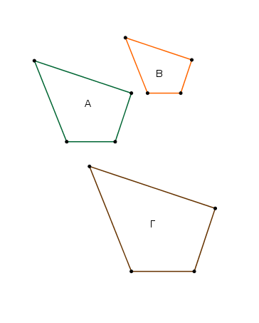
῎Εστω γὰρ ἑκάτερον τῶν Α, Β εὐθυγράμμων τῷ Γ ὅμοιον· λέγω, ὅτι καὶ τὸ Α τῷ Β ἐστιν ὅμοιον.
᾿Επεὶ γὰρ ὅμοιόν ἐστι τὸ Α τῷ Γ, ἰσογώνιόν τέ ἐστιν αὐτῷ καὶ τὰς περὶ τὰς ἴσας γωνίας πλευρὰς ἀνάλογον ἔχει.
πάλιν, ἐπεὶ ὅμοιόν ἐστι τὸ Β τῷ Γ, ἰσογώνιόν τέ ἐστιν αὐτῷ καὶ τὰς περὶ τὰς ἴσας γωνίας πλευρὰς ἀνάλογον ἔχει.
ἑκάτερον ἄρα τῶν Α, Β τῷ Γ ἰσογώνιόν τέ ἐστι καὶ τὰς περὶ τὰς ἴσας γωνίας πλευρὰς ἀνάλογον ἔχει [ὥστε καὶ τὸ Α τῷ Β ἰσογώνιόν τέ ἐστι καὶ τὰς περὶ τὰς ἴσας γωνίας πλευρὰς ἀνάλογον ἔχει]. ὅμοιον ἄρα ἐστὶ τὸ Α τῷ Β· ὅπερ ἔδει δεῖξαι.
᾿Εὰν τέσσαρες εὐθεῖαι ἀνάλογον ὦσιν, καὶ τὰ ἀπ᾿ αὐτῶν εὐθύγραμμα ὅμοιά τε καὶ ὁμοίως ἀναγεγραμμένα ἀνάλογον ἔσται· κἂν τὰ ἀπ᾿ αὐτῶν εὐθύγραμμα ὅμοιά τε καὶ ὁμοίως ἀναγεγραμμένα ἀνάλογον ᾖ, καὶ αὐτὰι αἱ εὐθεῖαι ἀνάλογον ἔσονται.
῎Εστωσαν τέσσαρες εὐθεῖαι ἀνάλογον αἱ ΑΒ, ΓΔ, ΕΖ, ΗΘ, ὡς ἡ ΑΒ πρὸς τὴν ΓΔ, οὕτως ἡ ΕΖ πρὸς τὴν ΗΘ, καὶ ἀναγεγράφθωσαν ἀπὸ μὲν τῶν ΑΒ, ΓΔ ὅμοιά τε καὶ ὁμοίως κείμενα εὐθύγραμμα τὰ ΚΑΒ, ΛΓΔ, ἀπὸ δὲ τῶν ΕΖ, ΗΘ ὅμοιά τε καὶ ὁμοίως κείμενα εὐθύγραμμα τὰ ΜΖ, ΝΘ· λέγω, ὅτι ἐστὶν ὡς τὸ ΚΑΒ πρὸς τὸ ΛΓΔ, οὕτως τὸ ΜΖ πρὸς τὸ ΝΘ.
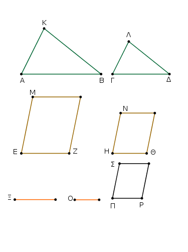
Εἰλήφθω γὰρ τῶν μὲν ΑΒ, ΓΔ τρίτη ἀνάλογον ἡ Ξ, τῶν δὲ ΕΖ, ΗΘ τρίτη ἀνάλογον ἡ Ο. καὶ ἐπεί ἐστιν ὡς μὲν ἡ ΑΒ πρὸς τὴν ΓΔ, οὕτως ἡ ΕΖ πρὸς τὴν ΗΘ, ὡς δὲ ἡ ΓΔ πρὸς τὴν Ξ, οὕτως ἡ ΗΘ πρὸς τὴν Ο, δι᾿ ἴσου ἄρα ἐστὶν ὡς ἡ ΑΒ πρὸς τὴν Ξ, οὕτως ἡ ΕΖ πρὸς τὴν Ο. ἀλλ᾿ ὡς μὲν ἡ ΑΒ πρὸς τὴν Ξ, οὕτως [καὶ] τὸ ΚΑΒ πρὸς τὸ ΛΓΔ, ὡς δὲ ἡ ΕΖ πρὸς τὴν Ο, οὕτως τὸ ΜΖ πρὸς τὸ ΝΘ· καὶ ὡς ἄρα τὸ ΚΑΒ πρὸς τὸ ΛΓΔ, οὕτως τὸ ΜΖ πρὸς τὸ ΝΘ.
᾿Αλλὰ δὴ ἔστω ὡς τὸ ΚΑΒ πρὸς τὸ ΛΓΔ, οὕτως τὸ ΜΖ πρὸς τὸ ΝΘ· λέγω, ὅτι ἐστὶ καὶ ὡς ἡ ΑΒ πρὸς τὴν ΓΔ, οὕτως ἡ ΕΖ πρὸς τὴν ΗΘ. εἰ γὰρ μή ἐστιν, ὡς ἡ ΑΒ πρὸς τὴν ΓΔ, οὕτως ἡ ΕΖ πρὸς τὴν ΗΘ, ἔστω ὡς ἡ ΑΒ πρὸς τὴν ΓΔ, οὕτως ἡ ΕΖ πρὸς τὴν ΠΡ, καὶ ἀναγεγράφθω ἀπὸ τῆς ΠΡ ὁποτέρῳ τῶν ΜΖ, ΝΘ ὅμοιόν τε καὶ ὁμοίως κείμενον εὐθύγραμμον τὸ ΣΡ.
᾿Επεὶ οὖν ἐστιν ὡς ἡ ΑΒ πρὸς τὴν ΓΔ, οὕτως ἡ ΕΖ πρὸς τὴν ΠΡ, καὶ ἀναγέγραπται ἀπὸ μὲν τῶν ΑΒ, ΓΔ ὅμοιά τε καὶ ὁμοίως κείμενα τὰ ΚΑΒ, ΛΓΔ, ἀπὸ δὲ τῶν ΕΖ, ΠΡ ὅμοιά τε καὶ ὁμοίως κείμενα τὰ ΜΖ, ΣΡ, ἔστιν ἄρα ὡς τὸ ΚΑΒ πρὸς τὸ ΛΓΔ, οὕτως τὸ ΜΖ πρὸς τὸ ΣΡ. ὑπόκειται δὲ καὶ ὡς τὸ ΚΑΒ πρὸς τὸ ΛΓΔ, οὕτως τὸ ΜΖ πρὸς τὸ ΝΘ· καὶ ὡς ἄρα τὸ ΜΖ πρὸς τὸ ΣΡ, οὕτως τὸ ΜΖ πρὸς τὸ ΝΘ. τὸ ΜΖ ἄρα πρὸς ἑκάτερον τῶν ΝΘ, ΣΡ τὸν αὐτὸν ἔχει λόγον· ἴσον ἄρα ἐστὶ τὸ ΝΘ τῷ ΣΡ. ἔστι δὲ αὐτῷ καὶ ὅμοιον καὶ ὁμοίως κείμενον· ἴση ἄρα ἡ ΗΘ τῇ ΠΡ. καὶ ἐπεί ἐστιν ὡς ἡ ΑΒ πρὸς τὴν ΓΔ, οὕτως ἡ ΕΖ πρὸς τὴν ΠΡ, ἴση δὲ ἡ ΠΡ τῇ ΗΘ, ἔστιν ἄρα ὡς ἡ ΑΒ πρὸς τὴν ΓΔ, οὕτως ἡ ΕΖ πρὸς τὴν ΗΘ.
᾿Εὰν ἄρα τέσσαρες εὐθεῖαι ἀνάλογον ὦσιν, καὶ τὰ ἀπ᾿ αὐτῶν εὐθύγραμμα ὅμοιά τε καὶ ὁμοίως ἀναγεγραμμένα ἀνάλογον ἔσται· κἂν τὰ ἀπ᾿ αὐτῶν εὐθύγραμμα ὅμοιά τε καὶ ὁμοίως ἀναγεγραμμένα ἀνάλογον ᾖ, καὶ αὐτὰι αἱ εὐθεῖαι ἀνάλογον ἔσονται· ὅπερ ἔδει δεῖξαι.
Τὰ ἰσογώνια παραλληλόγραμμα πρὸς ἄλληλα λόγον ἔχει τὸν συγκείμενον ἐκ τῶν πλευρῶν.
῎Εστω ἰσογώνια παραλληλόγραμμα τὰ ΑΓ, ΓΖ ἴσην ἔχοντα τὴν ὑπὸ ΒΓΔ γωνίαν τῇ ὑπὸ ΕΓΗ· λέγω, ὅτι τὸ ΑΓ παραλληλόγραμμον πρὸς τὸ ΓΖ παραλληλόγραμμον λόγον ἔχει τὸν συγκείμενον ἐκ τῶν πλευρῶν.
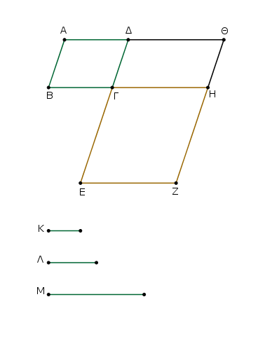
Κείσθω γὰρ ὥστε ἐπ᾿ εὐθείας εἶναι τὴν ΒΓ τῇ ΓΗ· ἐπ᾿ εὐθείας ἄρα ἐστὶ καὶ ἡ ΔΓ τῇ ΓΕ. καὶ συμπεπληρώσθω τὸ ΔΗ παραλληλόγραμμον, καὶ ἐκκείσθω τις εὐθεῖα ἡ Κ, καὶ γεγονέτω ὡς μὲν ἡ ΒΓ πρὸς τὴν ΓΗ, οὕτως ἡ Κ πρὸς τὴν Λ, ὡς δὲ ἡ ΔΓ πρὸς τὴν ΓΕ, οὕτως ἡ Λ πρὸς τὴν Μ. Οἱ ἄρα λόγοι τῆς τε Κ πρὸς τὴν Λ καὶ τῆς Λ πρὸς τὴν Μ οἱ αὐτοί εἰσι τοῖς λόγοις τῶν πλευρῶν, τῆς τε ΒΓ πρὸς τὴν ΓΗ καὶ τῆς ΔΓ πρὸς τὴν ΓΕ. ἀλλ᾿ ὁ τῆς Κ πρὸς Μ λόγος σύγκειται ἔκ τε τοῦ τῆς Κ πρὸς Λ λόγου καὶ τοῦ τῆς Λ πρὸς Μ· ὥστε καὶ ἡ Κ πρὸς τὴν Μ λόγον ἔχει τὸν συγκείμενον ἐκ τῶν πλευρῶν.
καὶ ἐπεί ἐστιν ὡς ἡ ΒΓ πρὸς τὴν ΓΗ, οὕτως τὸ ΑΓ παραλληλόγραμμον πρὸς τὸ ΓΘ, ἀλλ᾿ ὡς ἡ ΒΓ πρὸς τὴν ΓΗ, οὕτως ἡ Κ πρὸς τὴν Λ, καὶ ὡς ἄρα ἡ Κ πρὸς τὴν Λ, οὕτως τὸ ΑΓ πρὸς τὸ ΓΘ. πάλιν, ἐπεί ἐστιν ὡς ἡ ΔΓ πρὸς τὴν ΓΕ, οὕτως τὸ ΓΘ παραλληλόγραμμον πρὸς τὸ ΓΖ, ἀλλ᾿ ὡς ἡ ΔΓ πρὸς τὴν ΓΕ, οὕτως ἡ Λ πρὸς τὴν Μ, καὶ ὡς ἄρα ἡ Λ πρὸς τὴν Μ, οὕτως τὸ ΓΘ παραλληλόγραμμον πρὸς τὸ ΓΖ παραλληλόγραμμον.
ἐπεὶ οὖν ἐδείχθη, ὡς μὲν ἡ Κ πρὸς τὴν Λ, οὕτως τὸ ΑΓ παραλληλόγραμμον πρὸς τὸ ΓΘ παραλληλόγραμμον, ὡς δὲ ἡ Λ πρὸς τὴν Μ, οὕτως τὸ ΓΘ παραλληλόγραμμον πρὸς τὸ ΓΖ παραλληλόγραμμον, δι᾿ ἴσου ἄρα ἐστὶν ὡς ἡ Κ πρὸς τὴν Μ, οὕτως τὸ ΑΓ πρὸς τὸ ΓΖ παραλληλόγραμμον. ἡ δὲ Κ πρὸς τὴν Μ λόγον ἔχει τὸν συγκείμενον ἐκ τῶν πλευρῶν· καὶ τὸ ΑΓ ἄρα πρὸς τὸ ΓΖ λόγον ἔχει τὸν συγκείμενον ἐκ τῶν πλευρῶν.
Τὰ ἄρα ἰσογώνια παραλληλόγραμμα πρὸς ἄλληλα λόγον ἔχει τὸν συγκείμενον ἐκ τῶν πλευρῶν· ὅπερ ἔδει δεῖξαι.
Παντὸς παραλληλογράμμου τὰ περὶ τὴν διάμετρον παραλληλόγραμμα ὅμοιά ἐστι τῷ τε ὅλῳ καὶ ἀλλήλοις.
῎Εστω παραλληλόγραμμον τὸ ΑΒΓΔ, διάμετρος δὲ αὐτοῦ ἡ ΑΓ, περὶ δὲ τὴν ΑΓ παραλληλόγραμμα ἔστω τὰ ΕΗ, ΘΚ· λέγω, ὅτι ἑκάτερον τῶν ΕΗ, ΘΚ παραλληλογράμμων ὅμοιόν ἐστι ὅλῳ τῷ ΑΒΓΔ καὶ ἀλλήλοις.
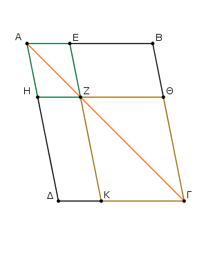
᾿Επεὶ γὰρ τριγώνου τοῦ ΑΒΓ παρὰ μίαν τῶν πλευρῶν τὴν ΒΓ ἦκται ἡ ΕΖ, ἀνάλογόν ἐστιν ὡς ἡ ΒΕ πρὸς τὴν ΕΑ, οὕτως ἡ ΓΖ πρὸς τὴν ΖΑ. πάλιν, ἐπεὶ τριγώνου τοῦ ΑΓΔ παρὰ μίαν τὴν ΓΔ ἦκται ἡ ΖΗ, ἀνάλογόν ἐστιν ὡς ἡ ΓΖ πρὸς τὴν ΖΑ, οὕτως ἡ ΔΗ πρὸς τὴν ΗΑ.
ἀλλ᾿ ὡς ἡ ΓΖ πρὸς τὴν ΖΑ, οὕτως ἐδείχθη καὶ ἡ ΒΕ πρὸς τὴν ΕΑ· καὶ ὡς ἄρα ἡ ΒΕ πρὸς τὴν ΕΑ, οὕτως ἡ ΔΗ πρὸς τὴν ΗΑ, καὶ συνθέντι ἄρα ὡς ἡ ΒΑ πρὸς ΑΕ, οὕτως ἡ ΔΑ πρὸς ΑΗ, καὶ ἐναλλὰξ ὡς ἡ ΒΑ πρὸς τὴν ΑΔ, οὕτως ἡ ΕΑ πρὸς τὴν ΑΗ.
τῶν ἄρα ΑΒΓΔ, ΕΗ παραλληλογράμμων ἀνάλογόν εἰσιν αἱ πλευραὶ αἱ περὶ τὴν κοινὴν γωνίαν τὴν ὑπὸ ΒΑΔ. καὶ ἐπεὶ παράλληλός ἐστιν ἡ ΗΖ τῇ ΔΓ, ἴση ἐστὶν ἡ μὲν ὑπὸ ΑΖΗ γωνία τῇ ὑπὸ ΔΓΑ· καὶ κοινὴ τῶν δύο τριγώνων τῶν ΑΔΓ, ΑΗΖ ἡ ὑπὸ ΔΑΓ γωνία· ἰσογώνιον ἄρα ἐστὶ τὸ ΑΔΓ τρίγωνον τῷ ΑΗΖ τριγώνῳ.
διὰ τὰ αὐτὰ δὴ καὶ τὸ ΑΓΒ τρίγωνον ἰσογώνιόν ἐστι τῷ ΑΖΕ τριγώνῳ, καὶ ὅλον τὸ ΑΒΓΔ παραλληλόγραμμον τῷ ΕΗ παραλληλογράμμῳ ἰσογώνιόν ἐστιν. ἀνάλογον ἄρα ἐστὶν ὡς ἡ ΑΔ πρὸς τὴν ΔΓ, οὕτως ἡ ΑΗ πρὸς τὴν ΗΖ, ὡς δὲ ἡ ΔΓ πρὸς τὴν ΓΑ, οὕτως ἡ ΗΖ πρὸς τὴν ΖΑ, ὡς δὲ ἡ ΑΓ πρὸς τὴν ΓΒ, οὕτως ἡ ΑΖ πρὸς τὴν ΖΕ, καὶ ἔτι ὡς ἡ ΓΒ πρὸς τὴν ΒΑ, οὕτως ἡ ΖΕ πρὸς τὴν ΕΑ. καὶ ἐπεὶ ἐδείχθη ὡς μὲν ἡ ΔΓ πρὸς τὴν ΓΑ, οὕτως ἡ ΗΖ πρὸς τὴν ΖΑ, ὡς δὲ ἡ ΑΓ πρὸς τὴν ΓΒ, οὕτως ἡ ΑΖ πρὸς τὴν ΖΕ, δι᾿ ἴσου ἄρα ἐστὶν ὡς ἡ ΔΓ πρὸς τὴν ΓΒ, οὕτως ἡ ΗΖ πρὸς τὴν ΖΕ.
τῶν ἄρα ΑΒΓΔ, ΕΗ παραλληλογράμμων ἀνάλογόν εἰσιν αἱ πλευραὶ αἱ περὶ τὰς ἴσας γωνίας· ὅμοιον ἄρα ἐστὶ τὸ ΑΒΓΔ παραλληλογράμμον τῷ ΕΗ παραλληλογράμμῳ. διὰ τὰ αὐτὰ δὴ τὸ ΑΒΓΔ παραλληλόγραμμον καὶ τῷ ΚΘ παραλληλογράμμῳ ὅμοιόν ἐστιν· ἑκάτερον ἄρα τῶν ΕΗ, ΘΚ παραλληλογράμμων τῷ ΑΒΓΔ [παραλληλογράμμῳ] ὅμοιόν ἐστιν. τὰ δὲ τῷ αὐτῷ εὐθυγράμμῳ ὅμοια καὶ ἀλλήλοις ἐστὶν ὅμοια· καὶ τὸ ΕΗ ἄρα παραλληλόγραμμον τῷ ΘΚ παραλληλογράμμῳ ὅμοιόν ἐστιν.
Παντὸς ἄρα παραλληλογράμμου τὰ περὶ τὴν διάμετρον παραλληλόγραμμα ὅμοιά ἐστι τῷ τε ὅλῳ καὶ ἀλλήλοις· ὅπερ ἔδει δεῖξαι.
Τῷ δοθέντι εὐθυγράμμῳ ὅμοιον καὶ ἄλλῳ τῷ δοθέντι ἴσον τὸ αὐτὸ συστήσασθαι.
῎Εστω τὸ μὲν δοθὲν εὐθύγραμμον, ᾧ δεῖ ὅμοιον συστήσασθαι, τὸ ΑΒΓ, ᾧ δὲ δεῖ ἴσον, τὸ Δ· δεῖ δὴ τῷ μὲν ΑΒΓ ὅμοιον, τῷ δὲ Δ ἴσον τὸ αὐτὸ συστήσασθαι.
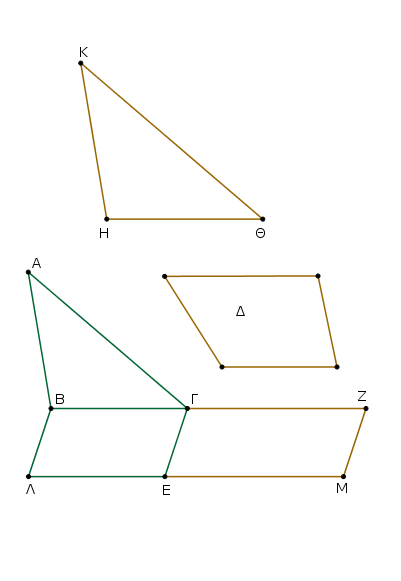
Παραβεβλήσθω γὰρ παρὰ μὲν τὴν ΒΓ τῷ ΑΒΓ τριγώνῳ ἴσον παραλληλόγραμμον τὸ ΒΕ, παρὰ δὲ τὴν ΓΕ τῷ Δ ἴσον παραλληλόγραμμον τὸ ΓΜ ἐν γωνίᾳ τῇ ὑπὸ ΖΓΕ, ἥ ἐστιν ἴση τῇ ὑπὸ ΓΒΛ. ἐπ᾿ εὐθείας ἄρα ἐστὶν ἡ μὲν ΒΓ τῇ ΓΖ, ἡ δὲ ΛΕ τῇ ΕΜ. καὶ εἰλήφθω τῶν ΒΓ, ΓΖ μέση ἀνάλογον ἡ ΗΘ, καὶ ἀναγεγράφθω ἀπὸ τῆς ΗΘ τῷ ΑΒΓ ὅμοιόν τε καὶ ὁμοίως κείμενον τὸ ΚΗΘ.
Καὶ ἐπεί ἐστιν ὡς ἡ ΒΓ πρὸς τὴν ΗΘ, οὕτως ἡ ΗΘ πρὸς τὴν ΓΖ, ἐὰν δὲ τρεῖς εὐθεῖαι ἀνάλογον ὦσιν, ἔστιν ὡς ἡ πρώτη πρὸς τὴν τρίτην, οὕτως τὸ ἀπὸ τῆς πρώτης εἶδος πρὸς τὸ ἀπὸ τῆς δευτέρας τὸ ὅμοιον καὶ ὁμοίως ἀναγραφόμενον, ἔστιν ἄρα ὡς ἡ ΒΓ πρὸς τὴν ΓΖ, οὕτως τὸ ΑΒΓ τρίγωνον πρὸς τὸ ΚΗΘ τρίγωνον. ἀλλὰ καὶ ὡς ἡ ΒΓ πρὸς τὴν ΓΖ, οὕτως τὸ ΒΕ παραλληλόγραμμον πρὸς τὸ ΕΖ παραλληλόγραμμον. καὶ ὡς ἄρα τὸ ΑΒΓ τρίγωνον πρὸς τὸ ΚΗΘ τρίγωνον, οὕτως τὸ ΒΕ παραλληλόγραμμον πρὸς τὸ ΕΖ παραλληλόγραμμον·
ἐναλλὰξ ἄρα ὡς τὸ ΑΒΓ τρίγωνον πρὸς τὸ ΒΕ παραλληλόγραμμον, οὕτως τὸ ΚΗΘ τρίγωνον πρὸς τὸ ΕΖ παραλληλόγραμμον. ἴσον δὲ τὸ ΑΒΓ τρίγωνον τῷ ΒΕ παραλληλογράμμῳ· ἴσον ἄρα καὶ τὸ ΚΗΘ τρίγωνον τῷ ΕΖ παραλληλογράμμῳ. ἀλλὰ τὸ ΕΖ παραλληλόγραμμον τῷ Δ ἐστιν ἴσον· καὶ τὸ ΚΗΘ ἄρα τῷ Δ ἐστιν ἴσον. ἔστι δὲ τὸ ΚΗΘ καὶ τῷ ΑΒΓ ὅμοιον.
Τῷ ἄρα δοθέντι εὐθυγράμμῳ τῷ ΑΒΓ ὅμοιον καὶ ἄλλῳ τῷ δοθέντι τῷ Δ ἴσον τὸ αὐτὸ συνέσταται τὸ ΚΗΘ· ὅπερ ἔδει ποιῆσαι.
᾿Εὰν ἀπὸ παραλληλογράμμου παραλληλόγραμμον ἀφαιρεθῇ ὅμοιόν τε τῷ ὅλῳ καὶ ὁμοίως κείμενον κοινὴν γωνίαν ἔχον αὐτῷ, περὶ τὴν αὐτὴν διάμετρόν ἐστι τῷ ὅλῳ.
᾿Απὸ γὰρ παραλληλογράμμου τοῦ ΑΒΓΔ παραλληλόγραμμον ἀφῃρήσθω τὸ ΑΖ ὅμοιον τῷ ΑΒΓΔ καὶ ὁμοίως κείμενον κοινὴν γωνίαν ἔχον αὐτῷ τὴν ὑπὸ ΔΑΒ· λέγω, ὅτι περὶ τὴν αὐτὴν διάμετρόν ἐστι τὸ ΑΒΓΔ τῷ ΑΖ.
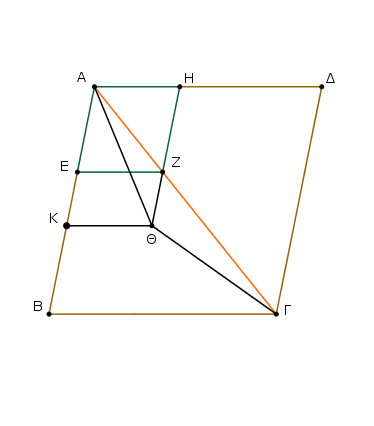
Μὴ γάρ, ἀλλ᾿ εἰ δυνατόν, ἔστω [αὐτῶν] διάμετρος ἡ ΑΘΓ, καὶ ἐκβληθεῖσα ἡ ΗΖ διήχθω ἐπὶ τὸ Θ, καὶ ἤχθω διὰ τοῦ Θ ὁπορέρᾳ τῶν ΑΔ, ΒΓ παράλληλος ἡ ΘΚ.
᾿Επεὶ οὖν περὶ τὴν αὐτὴν διάμετρόν ἐστι τὸ ΑΒΓΔ τῷ ΚΗ, ἔστιν ἄρα ὡς ἡ ΔΑ πρὸς τὴν ΑΒ, οὕτως ἡ ΗΑ πρὸς τὴν ΑΚ. ἔστι δὲ καὶ διὰ τὴν ὁμοιότητα τῶν ΑΒΓΔ, ΕΗ καὶ ὡς ἡ ΔΑ πρὸς τὴν ΑΒ, οὕτως ἡ ΗΑ πρὸς τὴν ΑΕ· καὶ ὡς ἄρα ἡ ΗΑ πρὸς τὴν ΑΚ, οὕτως ἡ ΗΑ πρὸς τὴν ΑΕ. ἡ ΗΑ ἄρα πρὸς ἑκατέραν τῶν ΑΚ, ΑΕ τὸν αὐτὸν ἔχει λόγον. ἴση ἄρα ἐστὶν ἡ ΑΕ τῇ ΑΚ ἡ ἐλάττων τῇ μείζονι· ὅπερ ἐστὶν ἀδύνατον. οὐκ ἄρα οὔκ ἐστι περὶ τὴν αὐτὴν διάμετρον τὸ ΑΒΓΔ τῷ ΑΖ· περὶ τὴν αὐτὴν ἄρα ἐστὶ διάμετρον τὸ ΑΒΓΔ παραλληλόγραμμον τῷ ΑΖ παραλληλογράμμῳ.
᾿Εὰν ἄρα ἀπὸ παραλληλογράμμου παραλληλόγραμμον ἀφαιρεθῇ ὅμοιόν τε τῷ ὅλῳ καὶ ὁμοίως κείμενον κοινὴν γωνίαν ἔχον αὐτῷ, περὶ τὴν αὐτὴν διάμετρόν ἐστι τῷ ὅλῳ· ὅπερ ἔδει δεῖξαι.
Πάντων τῶν παρὰ τὴν αὐτὴν εὐθεῖαν παραβαλλομένων παραλληλογράμμων καὶ ἐλλειπόντων εἴδεσι παραλληλογράμμοις ὁμοίοις τε καὶ ὁμοίως κειμένοις τῷ ἀπὸ τῆς ἡμισείας ἀναγραφομένῳ μέγιστόν ἐστι τὸ ἀπὸ τῆς ἡμισείας παραβαλλόμενον [παραλληλόγραμμον] ὅμοιον ὂν τῷ ἐλλείμμαντι.
῎Εστω εὐθεῖα ἡ ΑΒ καὶ τετμήσθω δίχα κατὰ τὸ Γ, καὶ παραβεβλήσθω παρὰ τὴν ΑΒ εὐθεῖαν τὸ ΑΔ παραλληλόγραμμον ἐλλεῖπον εἴδει παραλληλογράμμῳ τῷ ΔΒ ἀναγραφέντι ἀπὸ τῆς ἡμισείας τῆς ΑΒ, τουτέστι τῆς ΓΒ· λέγω, ὅτι πάντων τῶν παρὰ τὴν ΑΒ παραβαλλομένων παραλληλογράμμων καὶ ἐλλειπόντων εἴδεσι [παραλληλογράμμοις] ὁμοίοις τε καὶ ὁμοίως κειμένοις τῷ ΔΒ μέγιστόν ἐστι τὸ ΑΔ.
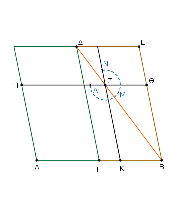
παραβεβλήσθω γὰρ παρὰ τὴν ΑΒ εὐθεῖαν τὸ ΑΖ παραλληλόγραμμον ἐλλεῖπον εἴδει παραλληλογράμμῳ τῷ ΖΒ ὁμοίῳ τε καὶ ὁμοίως κειμένῳ τῷ ΔΒ· λέγω, ὅτι μεῖζόν ἐστι τὸ ΑΔ τοῦ ΑΖ.
᾿Επεὶ γὰρ ὅμοιόν ἐστι τὸ ΔΒ παραλληλόγραμμον τῷ ΖΒ παραλλη-λογράμμῳ, περὶ τὴν αὐτήν εἰσι διάμετρον. ἤχθω αὐτῶν διάμετρος ἡ ΔΒ, καὶ καταγεγράφθω τὸ σχῆμα.
᾿Επεὶ οὖν ἴσον ἐστὶ τὸ ΓΖ τῷ ΖΕ, κοινὸν δὲ τὸ ΖΒ, ὅλον ἄρα τὸ ΓΘ ὅλῳ τῷ ΚΕ ἐστιν ἴσον. ἀλλὰ τὸ ΓΘ τῷ ΓΗ ἐστιν ἴσον, ἐπεὶ καὶ ἡ ΑΓ τῇ ΓΒ. καὶ τὸ ΗΓ ἄρα τῷ ΕΚ ἐστιν ἴσον. κοινὸν προσκείσθω τὸ ΓΖ· ὅλον ἄρα τὸ ΑΖ τῷ ΛΜΝ γνώμονί ἐστιν ἴσον· ὥστε τὸ ΔΒ παραλληλόγραμμον, τουτέστι τὸ ΑΔ, τοῦ ΑΖ παραλληλογράμμου μεῖζόν ἐστιν.
Πάντων ἄρα τῶν παρὰ τὴν αὐτὴν εὐθεῖαν παραβαλλομένων παραλληλογράμμων καὶ ἐλλειπόντων εἴδεσι παραλληλογράμμοις ὁμοίοις τε καὶ ὁμοίως κειμένοις τῷ ἀπὸ τῆς ἡμισείας ἀναγραφομένῳ μέγιστόν ἐστι τὸ ἀπὸ τῆς ἡμισείας παραβληθέν· ὅπερ ἔδει δεῖξαι.
Παρὰ τὴν δοθεῖσαν εὐθεῖαν τῷ δοθέντι εὐθυγράμμῳ ἴσον παραλληλόγραμμον παραβαλεῖν ἐλλεῖπον εἴδει παραλληλογράμμῳ ὁμοίῳ τῷ δοθέντι· δεῖ δὲ τὸ διδόμενον εὐθύγραμμον [ᾧ δεῖ ἴσον παραβαλεῖν] μὴ μεῖζον εἶναι τοῦ ἀπὸ τῆς ἡμισείας ἀναγραφομένου ὁμοίου τῷ ἐλλείμματι [τοῦ τε ἀπὸ τῆς ἡμισείας καὶ ᾧ δεῖ ὅμοιον ἐλλείπειν].
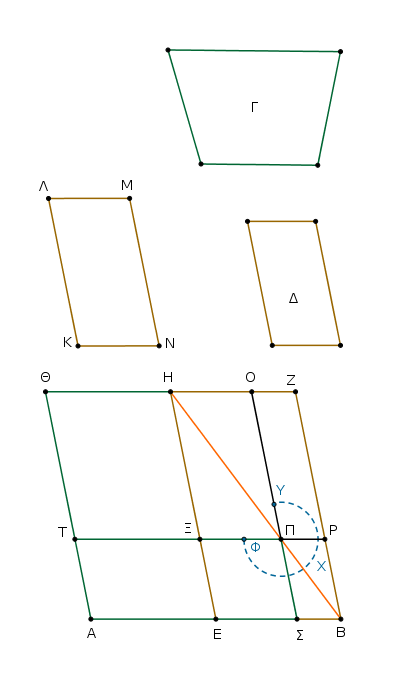
῎Εστω ἡ μὲν δοθεῖσα εὐθεῖα ἡ ΑΒ, τὸ δὲ δοθὲν εὐθύγραμμον, ᾧ δεῖ ἴσον παρὰ τὴν ΑΒ παραβαλεῖν, τὸ Γ μὴ μεῖζον [ὂν] τοῦ ἀπὸ τῆς ἡμισείας τῆς ΑΒ ἀναγραφομένου ὁμοίου τῷ ἐλλείμματι, ᾧ δὲ δεῖ ὅμοιον ἐλλείπειν, τὸ Δ· δεῖ δὴ παρὰ τὴν δοθεῖσαν εὐθεῖαν τὴν ΑΒ τῷ δοθέντι εὐθυγράμμῳ τῷ Γ ἴσον παραλληλόγραμμον παραβαλεῖν ἐλλεῖπον εἴδει παραλληλογράμμῳ ὁμοίῳ ὄντι τῷ Δ.
Τετμήσθω ἡ ΑΒ δίχα κατὰ τὸ Ε σημεῖον, καὶ ἀνα γεγράφθω ἀπὸ τῆς ΕΒ τῷ Δ ὅμοιον καὶ ὁμοίως κείμενον τὸ ΕΒΖΗ, καὶ συμπεπληρώσθω τὸ ΑΗ παραλληλόγραμμον.
Εἰ μὲν οὖν ἴσον ἐστὶ τὸ ΑΗ τῷ Γ, γεγονὸς ἂν εἴη τὸ ἐπιταχθέν· παραβέβληται γὰρ παρὰ τὴν δοθεῖσαν εὐθεῖαν τὴν ΑΒ τῷ δοθέντι εὐθυγράμμῳ τῷ Γ ἴσον παραλληλόγραμμον τὸ ΑΗ ἐλλεῖπον εἴδει παραλληλογράμμῳ τῷ ΗΒ ὁμοίῳ ὄντι τῷ Δ.
εἰ δὲ οὔ, μεῖζόν ἔστω τὸ ΘΕ τοῦ Γ. ἴσον δὲ τὸ ΘΕ τῷ ΗΒ· μεῖζον ἄρα καὶ τὸ ΗΒ τοῦ Γ. ᾧ δὴ μεῖζόν ἐστι τὸ ΗΒ τοῦ Γ, ταύτῃ τῇ ὑπεροχῇ ἴσον, τῷ δὲ Δ ὅμοιον καὶ ὁμοίως κείμενον τὸ αὐτὸ συνεστάτω τὸ ΚΛΜΝ.
ἀλλὰ τὸ Δ τῷ ΗΒ [ἐστιν] ὅμοιον· καὶ τὸ ΚΜ ἄρα τῷ ΗΒ ἐστιν ὅμοιον. ἔστω οὖν ὁμόλογος ἡ μὲν ΚΛ τῂ ΗΕ, ἡ δὲ ΛΜ τῇ ΗΖ. καὶ ἐπεὶ ἴσον ἐστὶ τὸ ΗΒ τοῖς Γ, ΚΜ, μεῖζον ἄρα ἐστὶ τὸ ΗΒ τοῦ ΚΜ· μείζων ἄρα ἐστὶ καὶ ἡ μὲν ΗΕ τῆς ΚΛ, ἡ δὲ ΗΖ τῆς ΛΜ.
κείσθω τῇ μὲν ΚΛ ἴση ἡ ΗΞ, τῇ δὲ ΛΜ ἴση ἡ ΗΟ, καὶ συμπεπληρώσθω τὸ ΞΗΟΠ παραλληλόγραμμον· ἴσον ἄρα καὶ ὅμοιον ἐστι [τὸ ΗΠ] τῷ ΚΜ [ἀλλὰ τὸ ΚΜ τῷ ΗΒ ὅμοιόν ἐστιν]. καὶ τὸ ΗΠ ἄρα τῷ ΗΒ ὅμοιόν ἐστιν· περὶ τὴν αὐτὴν ἄρα διάμετρόν ἐστι τὸ ΗΠ τῷ ΗΒ. ἔστω αὐτῶν διάμετρος ἡ ΗΠΒ, καὶ καταγεγράφθω τὸ σχῆμα.
᾿Επεὶ οὖν ἴσον ἐστὶ τὸ ΒΗ τοῖς Γ, ΚΜ, ὧν τὸ ΗΠ τῷ ΚΜ ἐστιν ἴσον, λοιπὸς ἄρα ὁ ΥΧΦ γνόμων λοιπῷ τῷ Γ ἴσος ἐστίν. καὶ ἐπεὶ ἴσον ἐστὶ τὸ ΟΡ τῷ ΞΣ, κοινὸν προσκείσθω τὸ ΠΒ· ὅλον ἄρα τὸ ΟΒ ὅλῳ τῷ ΞΒ ἴσον ἐστίν.
ἀλλὰ τὸ ΞΒ τῷ ΤΕ ἐστιν ἴσον, ἐπεὶ καὶ πλευρὰ ἡ ΑΕ πλευρᾷ τῇ ΕΒ ἐστιν ἴση· καὶ τὸ ΤΕ ἄρα τῷ ΟΒ ἐστιν ἴσον. κοινὸν προσκείσθω τὸ ΞΣ· ὅλον ἄρα τὸ ΤΣ ὅλῳ τῷ ΦΧΥ γνώμονί ἐστιν ἴσον. ἀλλ᾿ ὁ ΦΧΥ γνώμων τῷ Γ ἐδείχθη ἴσος· καὶ τὸ ΤΣ ἄρα τῷ Γ ἐστιν ἴσον.
Παρὰ τὴν δοθεῖσαν ἄρα εὐθεῖαν τὴν ΑΒ τῷ δοθέντι εὐθυγράμμῳ τῷ Γ ἴσον παραλληλόγραμμον παραβέβληται τὸ ΣΤ ἐλλεῖπον εἴδει παραλληλογράμμῳ τῷ ΠΒ ὁμοίῳ ὄντι τῷ Δ [ἐπειδήπερ τὸ ΠΒ τῷ ΗΠ ὅμοιόν ἐστιν]· ὅπερ ἔδει ποιῆσαι.
Παρὰ τὴν δοθεῖσαν εὐθεῖαν τῷ δοθέντι εὐθυγράμμῳ ἴσον παραλληλόγραμμον παραβαλεῖν ὑπερβάλλον εἴδει παραλληλογράμμῳ ὁμοίῳ τῷ δοθέντι.
῎Εστω ἡ μὲν δοθεῖσα εὐθεῖα ἡ ΑΒ, τὸ δὲ δοθὲν εὐθύγραμμον, ᾧ δεῖ ἴσον παρὰ τὴν ΑΒ παραβαλεῖν, τὸ Γ, ᾧ δὲ δεῖ ὅμοιον ὑπερβάλλειν, τὸ Δ· δεῖ δὴ παρὰ τὴν ΑΒ εὐθεῖαν τῷ Γ εὐθυγράμμῳ ἴσον παραλληλόγραμμον παραβαλεῖν ὑπερβάλλον εἴδει παραλληλογράμμῳ ὁμοίῳ τῷ Δ.
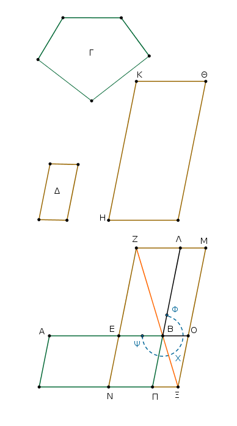
Τετμήσθω ἡ ΑΒ δίχα κατὰ τὸ Ε, καὶ ἀναγεγράθω ἀπὸ τὴς ΕΒ τῷ Δ ὅμοιον καὶ ὁμοίως κείμενον παραλληλόγραμμον τὸ ΒΖ, καὶ συναμφοτέροις μὲν τοῖς ΒΖ, Γ ἴσον, τῷ δὲ Δ ὅμοιον καὶ ὁμοίως κείμενον τὸ αὐτὸ συνεστάτω τὸ ΗΘ. ὁμόλογος δὲ ἔστω ἡ μὲν ΚΘ τῇ ΖΛ, ἡ δὲ ΚΗ τῇ ΖΕ.
καὶ ἐπεὶ μεῖζόν ἐστι τὸ ΗΘ τοῦ ΖΒ, μείζων ἄρα ἐστὶ καὶ ἡ μὲν ΚΘ τῆς ΖΛ, ἡ δὲ ΚΗ τῇ ΖΕ.
ἐκβεβλήσθωσαν αἱ ΖΛ, ΖΕ, καὶ τῇ μὲν ΚΘ ἴση ἔστω ἡ ΖΛΜ, τῇ δὲ ΚΗ ἴση ἡ ΖΕΝ, καὶ συμπεπληρώσθω τὸ ΜΝ·
τὸ ΜΝ ἄρα τῷ ΗΘ ἴσον τέ ἐστι καὶ ὅμοιον. ἀλλὰ τὸ ΗΘ τῷ ΕΛ ἐστιν ὅμοιον· καὶ τὸ ΜΝ ἄρα τῷ ΕΛ ὅμοιόν ἐστιν· περὶ τὴν αὐτὴν ἄρα διάμετρόν ἐστι τὸ ΕΛ τῷ ΜΝ. ἤχθω αὐτῶν διάμετρος ἡ ΖΞ, καὶ καταγεγράφθω τὸ σχῆμα.
᾿Επεὶ ἴσον ἐστὶ τὸ ΗΘ τοῖς ΕΛ, Γ, ἀλλὰ τὸ ΗΘ τῷ ΜΝ ἴσον ἐστίν, καὶ τὸ ΜΝ ἄρα τοῖς ΕΛ, Γ ἴσον ἐστίν. κοινὸν ἀφῃρήσθω τὸ ΕΛ· λοιπὸς ἄρα ὁ ΨΧΦ γνώμων τῷ Γ ἐστιν ἴσος.
καὶ ἐπεὶ ἴση ἐστὶν ἡ ΑΕ τῇ ΕΒ, ἴσον ἐστὶ καὶ τὸ ΑΝ τῷ ΝΒ, τουτέστι τῷ ΛΟ. κοινὸν προσκείσθω τὸ ΕΞ· ὅλον ἄρα τὸ ΑΞ ἴσον ἐστὶ τῷ ΦΧΨ γνώμονι. ἀλλὰ ὁ ΦΧΨ γνώμων τῷ Γ ἴσος ἐστίν· καὶ τὸ ΑΞ ἄρα τῷ Γ ἴσον ἐστίν.
Παρὰ τὴν δοθεῖσαν ἄρα εὐθεῖαν τὴν ΑΒ τῷ δοθέντι εὐθυγράμμῳ τῷ Γ ἴσον παραλληλόγραμμον παραβέβληται τὸ ΑΞ ὑπερβάλλον εἴδει παραλληλογράμμῳ τῷ ΠΟ ὁμοίῳ ὄντι τῷ Δ, ἐπεὶ καὶ τῷ ΕΛ ἐστιν ὅμοιον τὸ ΟΠ· ὅπερ ἔδει ποιῆσαι.
Τὴν δοθεῖσαν εὐθεῖαν πεπερασμένην ἄκρον καὶ μέσον λόγον τεμεῖν.
῎Εστω ἡ δοθεῖσα εὐθεῖα πεπερασμένη ἡ ΑΒ· δεῖ δὴ τὴν ΑΒ εὐθεῖαν ἄκρον καὶ μέσον λόγον τεμεῖν.
᾿Αναγεγράφθω ἀπὸ τῆς ΑΒ τετράγωνον τὸ ΒΓ, καὶ παραβεβλήσθω παρὰ τὴν ΑΓ τῷ ΒΓ ἴσον παραλληλόγραμμον τὸ ΓΔ ὑπερβάλλον εἴδει τῷ ΑΔ ὁμοίῳ τῷ ΒΓ.
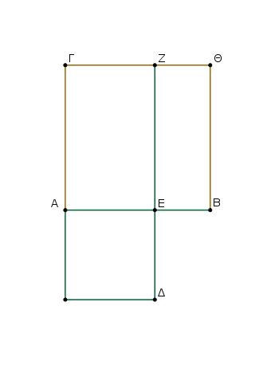
Τετράγωνον δέ ἐστι τὸ ΒΓ· τετράγωνον ἄρα ἐστι καὶ τὸ ΑΔ.
καὶ ἐπεὶ ἴσον ἐστὶ τὸ ΒΓ τῷ ΓΔ, κοινὸν ἀφῃρήσθω τὸ ΓΕ· λοιπὸν ἄρα τὸ ΒΖ λοιπῷ τῷ ΑΔ ἐστιν ἴσον. ἔστι δὲ αὐτῷ καὶ ἰσογώνιον·
τῶν ΒΖ, ΑΔ ἄρα ἀντιπεπόνθασιν αἱ πλευραὶ αἱ περὶ τὰς ἴσας γωνίας· ἔστιν ἄρα ὡς ἡ ΖΕ πρὸς τὴν ΕΔ, οὕτως ἡ ΑΕ πρὸς τὴν ΕΒ.
ἴση δὲ ἡ μὲν ΖΕ τῇ ΑΒ, ἡ δὲ ΕΔ τῇ ΑΕ. ἔστιν ἄρα ὡς ἡ ΒΑ πρὸς τὴν ΑΕ, οὕτως ἡ ΑΕ πρὸς τὴν ΕΒ.
μείζων δὲ ἡ ΑΒ τῆς ΑΕ· μείζων ἄρα καὶ ἡ ΑΕ τῆς ΕΒ.
῾Η ἄρα ΑΒ εὐθεῖα ἄκρον καὶ μέσον λόγον τέτμηται κατὰ τὸ Ε, καὶ τὸ μεῖζον αὐτῆς τμῆμά ἐστι τὸ ΑΕ· ὅπερ ἔδει ποιῆσαι.
᾿Εν τοῖς ὀρθογωνίοις τριγώνοις τὸ ἀπὸ τῆς τὴν ὀρθὴν γωνίαν ὑποτεινούσης πλευρᾶς εἶδος ἴσον ἐστὶ τοῖς ἀπὸ τῶν τὴν ὀρθὴν γωνίαν περιεχουσῶν πλευρῶν εἴδεσι τοῖς ὁμοίοις τε καὶ ὁμοίως ἀναγραφομένοις.
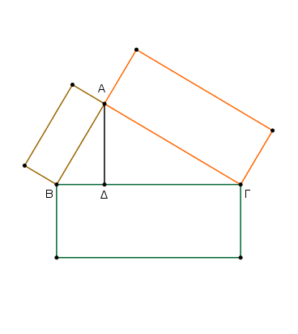
῎Εστω τρίγωνον ὀρθογώνιον τὸ ΑΒΓ ὀρθὴν ἔχον τὴν ὑπὸ ΒΑΓ γωνίαν· λέγω, ὅτι τὸ ἀπὸ τῆς ΒΓ εἶδος ἴσον ἐστὶ τοῖς ἀπὸ τῶν ΒΑ, ΑΓ εἴδεσι τοῖς ὁμοίοις τε καὶ ὁμοίως ἀναγραφομένοις.
῎Ηχθω κάθετος ἡ ΑΔ. ᾿Επεὶ οὖν ἐν ὀρθογωνίῳ τριγώνῳ τῷ ΑΒΓ ἀπὸ τῆς πρὸς τῷ Α ὀρθῆς γωνίας ἐπὶ τὴν ΒΓ βάσιν κάθετος ἦκται ἡ ΑΔ, τὰ ΑΒΔ, ΑΔΓ πρὸς τῇ καθέτῳ τρίγωνα ὅμοιά ἐστι τῷ τε ὅλῳ τῷ ΑΒΓ καὶ ἀλλήλοις. καὶ ἐπεὶ ὅμοιόν ἐστι τὸ ΑΒΓ τῷ ΑΒΔ, ἔστιν ἄρα ὡς ἡ ΓΒ πρὸς τὴν ΒΑ, οὕτως ἡ ΑΒ πρὸς τὴν ΒΔ.
καὶ ἐπεὶ τρεῖς εὐθεῖαι ἀνάλογόν εἰσιν, ἔστιν ὡς ἡ πρώτη πρὸς τὴν τρίτην, οὕτως τὸ ἀπὸ τῆς πρώτης εἶδος πρὸς τὸ ἀπὸ τῆς δευτέρας τὸ ὅμοιον καὶ ὁμοίως ἀναγραφόμενον. ὡς ἄρα ἡ ΓΒ πρὸς τὴν ΒΔ, οὕτως τὸ ἀπὸ τῆς ΓΒ εἶδος πρὸς τὸ ἀπὸ τῆς ΒΑ τὸ ὅμοιον καὶ ὁμοίως ἀναγραφόμενον.
διὰ τὰ αὐτὰ δὴ καὶ ὡς ἡ ΒΓ πρὸς τὴν ΓΔ, οὕτως τὸ ἀπὸ τῆς ΒΓ εἶδος πρὸς τὸ ἀπὸ τῆς ΓΑ. ὥστε καὶ ὡς ἡ ΒΓ πρὸς τὰς ΒΔ, ΔΓ, οὕτως τὸ ἀπὸ τῆς ΒΓ εἶδος πρὸς τὰ ἀπὸ τῶν ΒΑ, ΑΓ τὰ ὅμοια καὶ ὁμοίως ἀναγραφόμενα. ἴση δὲ ἡ ΒΓ ταῖς ΒΔ, ΔΓ· ἴσον ἄρα καὶ τὸ ἄπὸ τῆς ΒΓ εἶδος τοῖς ἀπὸ τῶν ΒΑ, ΑΓ εἴδεσι τοῖς ὁμοίοις τε καὶ ὁμοίως ἀναγραφομένοις.
᾿Εν ἄρα τοῖς ὀρθογωνίοις τριγώνοις τὸ ἀπὸ τῆς τὴν ὀρθὴν γωνίαν ὑποτεινούσης πλευρᾶς εἶδος ἴσον ἐστὶ τοῖς ἀπὸ τῶν τὴν ὀρθὴν γωνίαν περιεχουσῶν πλευρῶν εἴδεσι τοῖς ὁμοίοις τε καὶ ὁμοίως ἀναγραφομένοις· ὅπερ ἔδει δεῖξαι.
᾿Εὰν δύο τρίγωνα συντεθῇ κατὰ μίαν γωνίαν τὰς δύο πλευρὰς ταῖς δυσὶ πλευραῖς ἀνάλογον ἔχοντα ὥστε τὰς ὁμολόγους αὐτῶν πλευρὰς καὶ παραλλήλους εἶναι, αἱ λοιπαὶ τῶν τριγώνων πλευραὶ ἐπ᾿ εὐθείας ἔσονται.
῎Εστω δύο τρίγωνα τὰ ΑΒΓ, ΔΓΕ τὰς δύο πλευρὰς τὰς ΒΑ, ΑΓ ταῖς δυσὶ πλευραῖς ταῖς ΔΓ, ΔΕ ἀνάλογον ἔχοντα, ὡς μὲν τὴν ΑΒ πρὸς τὴν ΑΓ, οὕτως τὴν ΔΓ πρὸς τὴν ΔΕ, παράλληλον δὲ τὴν μὲν ΑΒ τῇ ΔΓ, τὴν δὲ ΑΓ τῇ ΔΕ· λέγω, ὅτι ἐπ᾿ εὐθείας ἐστὶν ἡ ΒΓ τῇ ΓΕ.
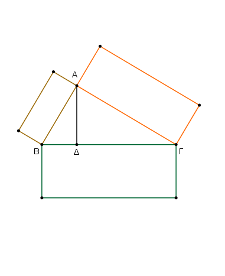
᾿Επεὶ γὰρ παράλληλός ἐστιν ἡ ΑΒ τῇ ΔΓ, καὶ εἰς αὐτὰς ἐμπέπτωκεν εὐθεῖα ἡ ΑΓ, αἱ ἐναλλὰξ γωνίαι αἱ ὑπὸ ΒΑΓ, ΑΓΔ ἴσαι ἀλλήλαις εἰσίν. διὰ τὰ αὐτὰ δὴ καὶ ἡ ὑπὸ ΓΔΕ τῇ ὑπὸ ΑΓΔ ἴση ἐστίν. ὥστε καὶ ἡ ὑπὸ ΒΑΓ τῇ ὑπὸ ΓΔΕ ἐστιν ἴση.
καὶ ἐπεὶ δύο τρίγωνά ἐστι τὰ ΑΒΓ, ΔΓΕ μίαν γωνίαν τὴν πρὸς τῷ Α μιᾷ γωνίᾳ τῇ πρὸς τῷ Δ ἴσην ἔχοντα, περὶ δὲ τὰς ἴσας γωνίας τὰς πλευρὰς ἀνάλογον, ὡς τὴν ΒΑ πρὸς τὴν ΑΓ, οὕτως τὴν ΓΔ πρὸς τὴν ΔΕ, ἰσογώνιον ἄρα ἐστὶ τὸ ΑΒΓ τρίγωνον τῷ ΔΓΕ τριγώνῳ· ἴση ἄρα ἡ ὑπὸ ΑΒΓ γωνία τῇ ὑπὸ ΔΓΕ.
ἐδείχθη δὲ καὶ ἡ ὑπὸ ΑΓΔ τῇ ὑπὸ ΒΑΓ ἴση· ὅλη ἄρα ἡ ὑπὸ ΑΓΕ δυσὶ ταῖς ὑπὸ ΑΒΓ, ΒΑΓ ἴση ἐστίν. κοινὴ προσκείσθω ἡ ὑπὸ ΑΓΒ· αἱ ἄρα ὑπὸ ΑΓΕ, ΑΓΒ ταῖς ὑπὸ ΒΑΓ, ΑΓΒ, ΓΒΑ ἴσαι εἰσίν.
ἀλλ᾿ αἱ ὑπὸ ΒΑΓ, ΑΒΓ, ΑΓΒ δυσὶν ὀρθαῖς ἴσαι εἰσίν· καὶ αἱ ὑπὸ ΑΓΕ, ΑΓΒ ἄρα δυσὶν ὀρθαῖς ἴσαι εἰσίν. πρὸς δή τινι εὐθείᾳ τῇ ΑΓ καὶ τῷ πρὸς αὐτῇ σημείῳ τῷ Γ δύο εὐθεῖαι αἱ ΒΓ, ΓΕ μὴ ἐπὶ τὰ αὐτὰ μέρη κείμεναι τὰς ἐφεξῆς γωνάις τὰς ὑπὸ ΑΓΕ, ΑΓΒ δυσὶν ὀρθαῖς ἴσας ποιοῦσιν· ἐπ᾿ εὐθείας ἄρα ἐστὶν ἡ ΒΓ τῇ ΓΕ.
᾿Εὰν ἄρα δύο τρίγωνα συντεθῇ κατὰ μίαν γωνίαν τὰς δύο πλευρὰς ταῖς δυσὶ πλευραῖς ἀνάλογον ἔχοντα ὥστε τὰς ὁμολόγους αὐτῶν πλευρὰς καὶ παραλλήλους εἶναι, αἱ λοιπαὶ τῶν τριγώνων πλευραὶ ἐπ᾿ εὐθείας ἔσονται· ὅπερ ἔδει δεῖξαι.
᾿Εν τοῖς ἴσοις κύκλοις αἱ γωνίαι τὸν αὐτὸν ἔχουσι λόγον ταῖς περιφερείαις, ἐφ᾿ ὧν βεβήκασιν, ἐάν τε πρὸς τοῖς κέντροις ἐάν τε πρὸς ταῖς περιφερείαις ὦσι βεβηκυῖαι.
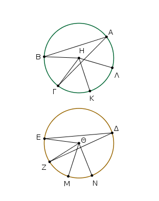
῎Εστωσαν ἴσοι κύκλοι οἱ ΑΒΓ, ΔΕΖ, καὶ πρὸς μὲν τοῖς κέντροις αὐτῶν τοῖς Η, Θ γωνίαι ἔστωσαν αἱ ὑπὸ ΒΗΓ, ΕΘΖ, πρὸς δὲ ταῖς περιφερείαις αἱ ὑπὸ ΒΑΓ, ΕΔΖ· λέγω, ὅτι ἐστὶν ὡς ἡ ΒΓ περιφέρεια πρὸς τὴν ΕΖ περιφέρειαν, οὕτως ἥ τε ὑπὸ ΒΗΓ γωνία πρὸς τὴν ὑπὸ ΕΘΖ καὶ ἡ ὑπὸ ΒΑΓ πρὸς τὴν ὑπὸ ΕΔΖ.
Κείσθωσαν γὰρ τῇ μὲν ΒΓ περιφερείᾳ ἴσαι κατὰ τὸ ἑξῆς ὁσαιδηποτοῦν αἱ ΓΚ, ΚΛ, τῇ δὲ ΕΖ περιφερείᾳ ἴσαι ὁσαιδηποτοῦν αἱ ΖΜ, ΜΝ, καὶ ἐπεζεύχθωσαν αἱ ΗΚ, ΗΛ, ΘΜ, ΘΝ.
᾿Επεὶ οὖν ἴσαι εἰσὶν αἱ ΒΓ, ΓΚ, ΚΛ περιφέρειαι ἀλλήλαις, ἴσαι εἰσὶ καὶ αἱ ὑπὸ ΒΗΓ, ΓΗΚ, ΚΗΛ γωνίαι ἀλλήλαις· ὁσαπλασίων ἄρα ἐστὶν ἡ ΒΛ περιφέρεια τῆς ΒΓ, τοσαυταπλασίων ἐστὶ καὶ ἡ ὑπὸ ΒΗΛ γωνία τῆς ὑπὸ ΒΗΓ.
διὰ τὰ αὐτὰ δὴ καὶ ὁσαπλασίων ἐστὶν ἡ ΝΕ περιφέρεια τῆς ΕΖ, τοσαυταπλασίων ἐστὶ καὶ ἡ ὑπὸ ΝΘΕ γωνία τῆς ὑπὸ ΕΘΖ. εἰ ἄρα ἴση ἐστὶν ἡ ΒΛ περιφέρεια τῇ ΕΝ περιφερείᾳ, ἴση ἐστὶ καὶ γωνία ἡ ὑπὸ ΒΗΛ τῇ ὑπὸ ΕΘΝ, καὶ εἰ μείζων ἐστὶν ἡ ΒΛ περιφέρεια τῆς ΕΝ περιφερείας, μείζων ἐστὶ καὶ ἡ ὑπὸ ΒΗΛ γωνία τῆς ὑπὸ ΕΘΝ, καὶ εἰ ἐλάσσων, ἐλάσσων.
τεσσάρων δὴ ὄντων μεγεθῶν, δύο μὲν περιφερειῶν τῶν ΒΓ, ΕΖ, δύο δὲ γωνιῶν τῶν ὑπὸ ΒΗΓ, ΕΘΖ, εἴληπται τῆς μὲν ΒΓ περιφερείας καὶ τῆς ὑπὸ ΒΗΓ γωνίας ἰσάκις πολλαπλασίων ἥ τε ΒΛ περιφέρεια καὶ ἡ ὑπὸ ΒΗΛ γωνία, τῆς δὲ ΕΖ περιφερείας καὶ τῆς ὑπὸ ΕΘΖ γωνίας ἥ τε ΕΝ περιφέρεια καὶ ἡ ὑπὸ ΕΘΝ γωνία.
καὶ δέδεικται, ὅτι εἰ ὑπερέχει ἡ ΒΛ περιφέρεια τῆς ΕΝ περιφερείας, ὑπερέχει καὶ ἡ ὑπὸ ΒΗΛ γωνία τῆς ὑπο ΕΘΝ γωνίας, καὶ εἰ ἴση, ἴση, καὶ εἰ ἐλάσσων, ἐλάσσων. ἔστιν ἄρα, ὡς ἡ ΒΓ περιφέρεια πρὸς τὴν ΕΖ, οὕτως ἡ ὑπὸ ΒΗΓ γωνία πρὸς τὴν ὑπὸ ΕΘΖ. ἀλλ᾿ ὡς ἡ ὑπὸ ΒΗΓ γωνία πρὸς τὴν ὑπὸ ΕΘΖ, οὕτως ἡ ὑπὸ ΒΑΓ πρὸς τὴν ὑπὸ ΕΔΖ. διπλασία γὰρ ἑκατέρα ἑκατέρας. καὶ ὡς ἄρα ἡ ΒΓ περιφέρεια πρὸς τὴν ΕΖ περιφέρειαν, οὕτως ἥ τε ὑπὸ ΒΗΓ γωνία πρὸς τὴν ὑπὸ ΕΘΖ καὶ ἡ ὑπὸ ΒΑΓ πρὸς τὴν ὑπὸ ΕΔΖ.
᾿Εν ἄρα τοῖς ἴσοις κύκλοις αἱ γωνίαι τὸν αὐτὸν ἔχουσι λόγον ταῖς περιφερείαις, ἐφ᾿ ὧν βεβήκασιν, ἐάν τε πρὸς τοῖς κέντροις ἐάν τε πρὸς ταῖς περιφερείαις ὦσι βεβηκυῖαι· ὅπερ ἔδει δεῖξαι.